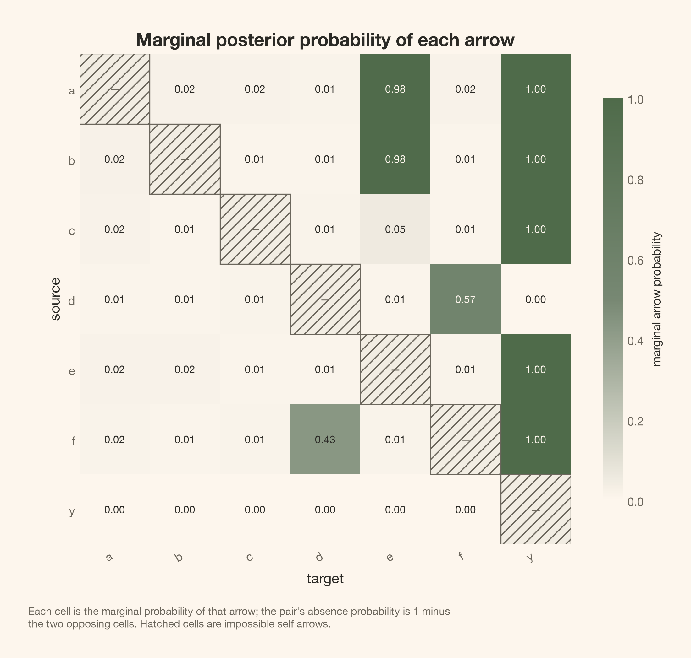
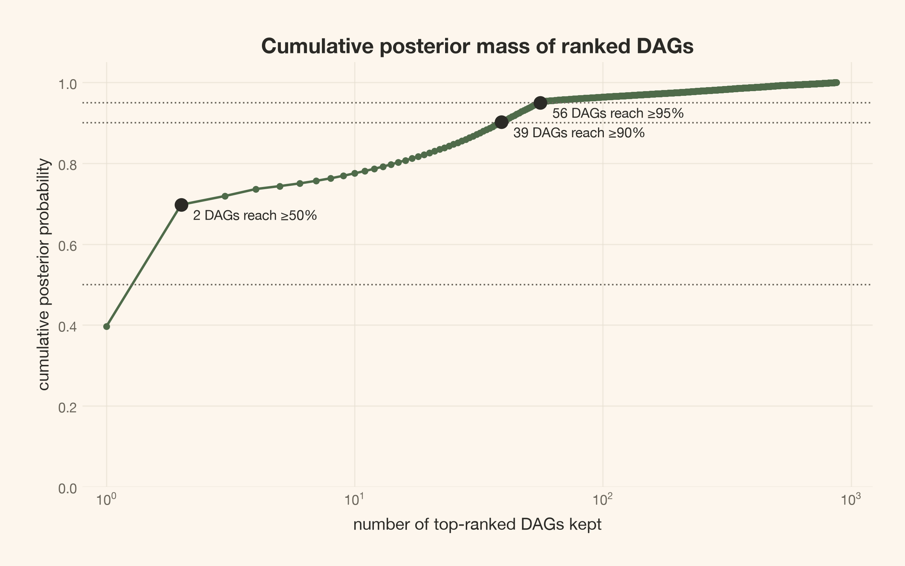

A proper finite-basis graph posterior, exact terminal-parent weights, discrete PyMC sampling, and independent computational checks—with a clear boundary between checking computation and validating causal assumptions.
Author
Carlos Trujillo
Published
October 7, 2026
Introduction
“The graph posterior converged, so we discovered the causal structure.” The first half can be a useful computational statement. The second does not follow.
We can integrate every regression parameter correctly, sample the graph target carefully, and reproduce an exact oracle while comparing the wrong causal possibilities. A posterior over graphs makes structure uncertain inside a declared model family. It does not make the family itself correct.
Part 2 of 3.A Causal Graph Is Not One Graph separates DAGs, skeletons, and observational equivalence classes. Here we build the distribution those summaries describe. This article generates its own data and fits its own graphs; it does not require another article’s execution state.
Our central question is practical: what must we specify and check before a graph probability deserves interpretation? We will answer it in a controlled world whose nonlinear outcome does not identify every upstream direction. That unresolved direction stays with us through the evidence calculation, the sampler diagnostics, and the computational checks.
Quick summary
This article walks you through:
A complete graph model: measured variables, mechanism families, proper parameter priors, a directional graph prior, and hard support.
Exact integration for an approximation: the full normal-inverse-gamma evidence for a fixed nonlinear dictionary, including units and translation caveats.
Exact terminal parents: why 64 outcome-parent weights separate from a six-node graph search, and when that separation would fail.
Discrete PyMC sampling: legal self-transitions, likelihood tempering, cold-chain reconstruction, and initial graphs that are not prior draws.
Diagnostics on graph questions: running probabilities, scalar traces, Monte Carlo errors, constant indicators, and temperature movement.
Measured posterior summaries and sensitivity: ranked DAGs, skeletons and classes, a ten-row prespecified comparison, and two independent oracles with complete results.
Setup and long plotting blocks are folded; the computations that establish the argument stay visible.
Theoretical lens
A model of models is still one conditional model
The Bayesian move is to make the model index unknown, not to remove assumptions. Let G denote a candidate DAG and \theta_G its mechanism parameters. For one dataset D, the joint posterior is
where K denotes background restrictions. We must specify a likelihood, a parameter prior for each candidate, and a graph prior. Integrating \theta_G gives the graph posterior; drawing it later conditional on G would recover the joint posterior. This is one joint model with one unknown graph shared across all observations, not a separate graph for each row.
Our causal lens is an acyclic structural causal model with independent errors. An arrow names a direct input to a mechanism; it does not specify the response shape or its magnitude. The candidate equations are
The mechanisms are additive. Upstream responses are linear; only the outcome receives a fixed nonlinear dictionary. Independent mechanism priors will make the integrated likelihood decomposable across nodes. Those choices, rather than the word “Bayesian,” make the computation below possible.
We assume independent, complete observations on a fixed set of correctly measured variables; no hidden common causes, selection, feedback, or measurement error; and homoscedastic Gaussian errors within each node. We use causal Markov and faithfulness to interpret conditional-independence classes. Faithfulness excludes extra independences caused by exact cancellations. Neither these assumptions nor the hard mask will be tested by \widehat R.
Getting started
The primary settings are frozen: N=1{,}000 observations, four chains with 3,000 warmup and 12,000 retained draws each, and a 16-replica temperature ladder. Shared helpers provide implementation, not shared posterior state.
The predictor transforms are fixed in advance, not fitted from sample moments. The outcome remains in raw units. The settings below apply to every production fit unless a sensitivity row explicitly changes one of them.
print(f"Nodes: {labels}; {len(pairs)} unordered pairs; primary N = {n_obs:,}")print(f"Data seeds: {(DATA_SEED, *REPEAT_SEEDS)}; repeated sizes: {(N_REPEAT, n_obs)}")print(f"Posterior seed: {SAMPLING_SEED}; graph-prior seed: {PRIOR_SEED}")print(f"Each fit: {chains} chains × {draws:,} draws after {tune:,} warmup draws")print(f"Temperature ladder: {len(betas)} replicas, from beta={betas[0]:g} to {betas[-1]:g}")print(f"Dictionary centers: {centers}; width: {width}; locations: {loc}")print(f"Predictor scales in node order: {tuple(scale)}")print(f"NIG settings: tau0={tau0}, lam={lam}, alpha0={alpha0}, beta0={beta0}")
Nodes: ('a', 'b', 'c', 'd', 'e', 'f', 'y'); 21 unordered pairs; primary N = 1,000
Data seeds: (20260909, 20260910, 20260911); repeated sizes: (300, 1000)
Posterior seed: 20260929; graph-prior seed: 20260959
Each fit: 4 chains × 12,000 draws after 3,000 warmup draws
Temperature ladder: 16 replicas, from beta=1 to 0
Dictionary centers: (-1.0, 1.0); width: 1.5; locations: 0.0
Predictor scales in node order: (np.float64(1.0), np.float64(1.0), np.float64(1.0), np.float64(1.0), np.float64(1.5), np.float64(1.5), np.float64(2.0))
NIG settings: tau0=0.01, lam=0.1, alpha0=2.0, beta0=1.0
A nonlinear outcome does not resolve every causal direction
We use seven continuous indices a,b,c,d,e,f,y. The four roots are independent; a and b enter e; d enters f; and five variables enter y:
All seven errors are mutually independent \mathcal N(0,1). The shared generator draws them row-wise, so a 300-row dataset is a prefix of the corresponding 1,000-row dataset. An intervention would replace one equation while retaining the others.
The response uses PyMC-Marketing’s MichaelisMentenSaturation, with saturation level 6 and half-saturation exposure 1. Its input must be nonnegative. The declared softplus link converts the signed Gaussian index into exposure before saturation. These are synthetic indices, not literal spend or holiday-count measurements. The resulting h is increasing and bounded between 0 and 6.
Generate this article’s own data
data = make_world(DATA_SEED, n_obs)truth = np.array([0, 0, 0, 0, 3, 8, 55], dtype=np.int64)truth_states = parents_to_states(truth, pairs)truth_key = mec_key(truth)print(f"Generated {n_obs:,} rows with seed {DATA_SEED}")print("The generating graph is used for evaluation only; no fit receives it.")
Generated 1,000 rows with seed 20260909
The generating graph is used for evaluation only; no fit receives it.
Figure 1 keeps the distinction between an isolated response and an observed association visible. The scatter includes the other four parent contributions and outcome noise.
Figure 1: The generating world is linear upstream and nonlinear only at y. The middle panel is the Michaelis–Menten response after softplus, not the fitted finite dictionary. The scatter of y against f is an observational association, not an isolated intervention curve.
There is already a limit that no sampler can repair. Reverse only d\rightarrow f and use
They therefore share p(d,f) and the unchanged conditional law p(y\mid a,b,c,e,f), as well as the other factors. Their full observational distributions are equal. In the generating world, intervening on d moves f and then y; in the twin, f is a root and y does not change.
This Gaussian reversal remains available despite the nonlinear outcome. Nonlinear additive-noise identification can help under further conditions (Peters et al., 2014), but it does not identify this reversible Gaussian pair. The posterior can assign unequal weights to the two orientations through its parameter priors. A well-computed probability split is not observational identification.
A graph probability requires a proper mechanism score
What quantity should update a graph’s prior weight? Not its best-fit likelihood. Bayes’ rule requires the likelihood averaged over the parameter prior:
A larger parent set can fit more patterns, but its evidence also averages over more possible coefficient values. A proper prior makes this comparison defined. We choose conjugacy so that this integral can be evaluated, rather than estimated separately for every graph.
The fixed dictionary is nonlinear in inputs, not in coefficients
For each potential parent j, define z_j=(X_j-\mathrm{loc}_j)/\mathrm{scale}_j. A linear child uses \phi_i(z_j)=[z_j]. Only child y gets
The dictionary is child-specific and fixed before scoring. No graph gets its own fitted centers or sample centering. Each parent contributes one upstream column or three outcome columns, plus one intercept per mechanism. The model has no within-mechanism parent interactions.
The true h is not in this finite dictionary. Upstream generating equations are in the linear families, but the outcome is approximated. “Exact evidence” below means exact integration for the approximating family, not an exact Michaelis–Menten likelihood or guaranteed saturating extrapolation.
Completing the square gives the full integrated evidence
Take one child i and candidate parent set P, ordered by node index. Let t=x_i\in\mathbb R^N be its raw target vector and A\in\mathbb R^{N\times p} the design matrix: an intercept followed by the selected parents’ feature blocks. With v=\sigma_i^2, the normalized likelihood and prior are
This states the inverse-gamma shape/scale convention and the zero-mean normal prior explicitly. All mechanisms have independent priors conditional on G. The baseline uses \tau_0=0.01, \lambda=0.1, \alpha_0=2, and \beta_{0i}=1 for every node.
The same calculation yields v\mid D,P\sim\operatorname{IG}(a_N,b_N) and \theta\mid v,D,P\sim\mathcal N(m_N,v\Lambda_N^{-1}). We use Cholesky solves, not an explicit matrix inverse. The residual-plus-prior expression for b_N avoids subtracting nearly equal quadratic forms.
With independent mechanism priors, the full DAG evidence factors over its local families:
At N=0, \Lambda_N=\Lambda_0, m_N=0, a_N=\alpha_0, and b_N=\beta_{0i}. Every local log evidence is exactly zero and the parameter posterior is its prior. We will use this identity to sample the graph prior itself.
Raw targets make the unit convention part of the model
There is no Jacobian in the predictor feature map: the likelihood density is evaluated on raw targets, and the conditioning-variable transform was fixed before scoring. Locations and scales use raw predictor units; the resulting z, centers, and width are dimensionless. Under the conditional-v coefficient prior, \tau_0, \lambda, and \alpha_0 are dimensionless, while \beta_{0i} has squared target units.
A coherent positive unit change X_i'=c_iX_i requires
Then predictor features stay the same, v_i'=c_i^2v_i, and the coefficients including the intercept scale by c_i. Absolute graph log evidence changes by the density factor -N\sum_i\log c_i, which is common to every graph. Relative graph weights remain unchanged. Keeping \beta_0=1 after changing target units would instead change the prior and the graph posterior.
Translation needs more than a new predictor location. Under X_i'=c_iX_i+r_i, the coherent intercept prior has mean r_i, not zero. This implementation fixes that mean at zero. Updating only locations and scales does not make a translated analysis the same model. Standardizing or centering a target while retaining the original zero-mean intercept prior is a scientific change, not harmless preprocessing.
A variance mean is not a standard-deviation mean
The baseline \operatorname{IG}(2,1) variance prior has mean 1 and infinite variance. It does not imply \mathbb E[\sigma]=1: \mathbb E[\sqrt v]=\sqrt{\beta_0}\,\Gamma(\alpha_0-1/2)/\Gamma(\alpha_0). The unit variance mean matches this synthetic generator by design; it is not a transferable default for every measured variable.
The score table subtracts a constant, not an Occam penalty
For efficient lookup, BasisScore.table[i, P] stores
Summing these entries subtracts C(D)=\sum_i\log p(x_i\mid\varnothing) from every graph’s absolute log evidence. The constant cancels in posterior weights and Metropolis ratios. It does not remove the determinant and prior-volume terms from the proper evidence. score.graph_score retains the absolute sum when that is needed.
score = build_score(data)linear_score = BasisScore( data, nonlinear_nodes=(), centers=(), width=width, loc=loc, scale=scale, tau0=tau0, lam=lam, alpha0=alpha0, beta0=beta0,)print(f"Upstream: linear; y: 1 linear term + {len(centers)} bumps per parent")print("The comparator drops only y's bumps; all parameter-prior hyperparameters stay fixed.")
Upstream: linear; y: 1 linear term + 2 bumps per parent
The comparator drops only y's bumps; all parameter-prior hyperparameters stay fixed.
The comparator will ask what changes when only the outcome dictionary changes. A few local entries first make the relative-score convention concrete. They are log density ratios with no units; even poor candidate families have finite scores.
Relative evidence for selected outcome families
family_masks = {"no parents": 0,"a only": 1<<0,"d only": 1<< d_index,"f only": 1<< f_index,"a, b, c, e, f (generating)": 55,"all six candidates": (1<< n_nodes) -1- (1<< y_index),}local_rows = [ {"Parents of y": name,"Nonlinear dictionary": score.table[y_index, mask],"Linear dictionary": linear_score.table[y_index, mask], }for name, mask in family_masks.items()]display(article_table( pd.DataFrame(local_rows),"Local evidence of y's families, relative to the intercept-only family", formats={"Nonlinear dictionary": "{:.2f}", "Linear dictionary": "{:.2f}"},))
Table 1: Local evidence of y's families, relative to the intercept-only family
Parents of y
Nonlinear dictionary
Linear dictionary
no parents
0.00
0.00
a only
142.98
146.17
d only
40.91
45.57
f only
111.75
113.54
a, b, c, e, f (generating)
731.36
714.63
all six candidates
723.56
710.59
This construction is not guaranteed score-equivalent. Markov-equivalent DAGs need not receive equal integrated evidence. A CPDAG groups conditional-independence structure, not arbitrary nonlinear likelihood families or independently specified parameter priors. The classical score-equivalent Gaussian construction of Geiger and Heckerman and its corrected scoring treatment will appear only in an independent oracle, not as this article’s model.
Hard support and local beliefs are different prior decisions
For each unordered pair (i,j), with i<j, the state is absent, forward (i\rightarrow j), or backward (j\rightarrow i). A source-by-target direction matrix P supplies the unmasked local weights
Before restrictions, P_{ij}=(1-\delta_{ij})/3, so each pair has (1/3,1/3,1/3). The baseline mask prohibits self arrows and every outgoing arrow from y. After masking and renormalizing, a core pair still has three equal weights; a pair incident to y has probability 1/2 for absence and 1/2 for the incoming arrow.
The full graph prior is
\pi(G\mid K)\propto
\mathbf 1\{G\text{ is acyclic and respects }K\}
\prod_{i<j}q_{ij}\big(s_{ij}(G)\big).
The q_{ij} are local pair probabilities before conditioning on acyclicity, not the DAG prior’s marginal arrow probabilities. Global acyclicity couples the core pairs. A hard zero removes a graph from support; a small positive weight only discourages it.
The terminal-outcome rule is background knowledge, not a discovery from correlations. It is true in this generator, but we have not supplied y’s five parents, the direction of d–f, or any other generating edge. The baseline here does not include a media-to-calendar restriction.
Figure 2: The graph prior has two layers: local directional probabilities before masking, and hard restrictions. Rows are sources and columns are targets. Hatching marks impossible self arrows. Conditioning on acyclicity is an additional global step, so these cells are not DAG-prior marginals.
One terminal node separates 64 exact weights from the search
Can we eliminate part of the graph search without fixing its answer? Here we can, because the prior and the score have a specific factorization.
Let G_c=G_{-y} be the six-node core and P_y the parents of y. No directed cycle can pass through y when it has no outgoing arrows. Any subset of the other six nodes can therefore enter y, regardless of the acyclic core graph. In addition:
the pair-factorized graph prior separates into core and terminal-incident factors;
the evidence is a sum of local scores, with no shared mechanism parameters;
the fixed score \ell_y(P_y) depends on the observed parent columns, not on how their own arrows are oriented.
Together these facts give the unnormalized factorization
All 2^6=64 parent sets have support in this baseline. Their pair-prior product is the same (1/2)^6, although their evidence is not. We normalize these 64 weights exactly. MCMC is left with the core; an independent terminal-parent draw reconstructs a complete seven-node DAG after each retained cold update.
terminal_posteriors = terminal_parent_distributions(score.table, pairs, baseline_probs)masks, weights = terminal_posteriors[y_index]print(f"Exactly normalized outcome-parent sets: {len(masks)}")print(f"Their weights sum to {weights.sum():.12f}")
Exactly normalized outcome-parent sets: 64
Their weights sum to 1.000000000000
This also explains the controlled linear comparator analytically. Dropping only y’s bumps changes the terminal factor but none of the core local scores or core-prior factors. The core posterior is unchanged. Its separately sampled frequencies can differ through Monte Carlo error, but its target cannot change under this factorization. More expressive outcome features do not provide a new route to identifying d–f.
Would any outcome-terminal model separate this way? No. A graph prior that couples terminal parents to core structure, shared mechanism parameters, or graph-specific fitted dictionaries could break this argument. Allowing an outgoing arrow from y would also couple its parents to the cycle constraint. Terminal status alone is not sufficient.
The remaining search is smaller, not small by default
There are 1,138,779,265 labeled DAGs on seven nodes. We count them through the sink-set recurrence, rather than enumerate them. If A_n is the number of labeled DAGs and A_0=1,
Our mask leaves the six-node core unrestricted, so the number of admissible full DAGs is A_6\times64. The local evidence table need not enumerate those full graphs.
Count graph and local-family search spaces
dag_counts = [1]for size inrange(1, n_nodes +1): dag_counts.append(sum( (-1) ** (sinks +1) * comb(size, sinks)*2** (sinks * (size - sinks)) * dag_counts[size - sinks]for sinks inrange(1, size +1) ))core_nodes = n_nodes -len(terminal_posteriors)terminal_combinations = prod(len(node_masks) for node_masks, _ in terminal_posteriors.values())space = pd.DataFrame({"Quantity": ["Admissible full DAGs", "DAG states left to MCMC","Pairs in MCMC proposals", "Admissible local parent sets", ],"Unrestricted": [ dag_counts[n_nodes], dag_counts[n_nodes],len(pairs), n_nodes *2** (n_nodes -1), ],"Mask + terminal reduction": [ dag_counts[core_nodes] * terminal_combinations, dag_counts[core_nodes],len(pairs_for(core_nodes)), sum(2**int(count) for count in allowed.sum(axis=0)), ],})display(article_table( space, "Search-space sizes for this mask, not measured runtime speedups", formats={"Unrestricted": "{:,.0f}", "Mask + terminal reduction": "{:,.0f}"},))
Table 2: Search-space sizes for this mask, not measured runtime speedups
Quantity
Unrestricted
Mask + terminal reduction
Admissible full DAGs
1,138,779,265
242,016,192
DAG states left to MCMC
1,138,779,265
3,781,503
Pairs in MCMC proposals
21
15
Admissible local parent sets
448
256
Without restrictions there are n2^{n-1} valid local parent families. The implementation uses a padded node-by-2^n array, including unused self-parent slots. Family construction also costs design-matrix operations whose size depends on the dictionary and parent count. The exponential local-table growth, not the integer code’s maximum, is the practical scaling limit. These counts are not a benchmark or a guarantee for larger graphs.
PyMC holds the target; a discrete kernel moves through it
The inspectable model is one graph shared by one dataset
pymc.dims makes dimension names part of tensor operations. Ordinary PyTensor indexing first maps the categorical pair states into an adjacency matrix; we then name its axes parent and child. Named .isel(mask=parents) looks up every child’s score. Transitive closure checks for a cycle.
We display the actual shared implementation, not a second definition that might diverge from the executed model.
defmake_graph_model(score,pair_probs,labels):"""One dataset, one unknown DAG; mechanisms are integrated out."""pairs=pairs_for(len(labels))coords={"node":labels,"parent":labels,"child":labels,"pair":[f"{labels[i]}–{labels[j]}"fori,jinpairs],"state":["absent","forward","backward"],"mask":np.arange(2**len(labels)),}withpm.Model(coords=coords)asmodel:probabilities=pmd.as_xtensor(pair_probs,dims=("pair","state"))initial=initial_states(pair_probs,pairs,len(labels),np.random.default_rng(0),empty=True,)edge=pmd.Categorical("edge",p=probabilities,core_dims="state",initval=initial)i,j=pairs.Tstate=edge.valuesadjacency=pt.zeros((len(labels),len(labels)),dtype="int64")adjacency=pt.set_subtensor(adjacency[i,j],pt.eq(state,1))adjacency=pt.set_subtensor(adjacency[j,i],pt.eq(state,2))adjacency=pmd.as_xtensor(adjacency,dims=("parent","child"))bits=pmd.as_xtensor(1<<np.arange(len(labels)),dims=("parent",))parents=(adjacency*bits).sum("parent").rename({"child":"node"})local_score=pmd.as_xtensor(score.table,dims=("node","mask"))evidence=local_score.isel(mask=parents).sum("node")reach=adjacency.astype("bool")forkinrange(len(labels)):reach=reach|(reach.isel(child=k)&reach.isel(parent=k))diagonal=pmd.as_xtensor(np.eye(len(labels),dtype=bool),dims=("parent","child"))cycle=(reach&diagonal).any()pmd.Potential("dag_support",ptx.where(cycle,-np.inf,0.0))pmd.Potential("marginal_likelihood",evidence)pmd.Deterministic("log_evidence",evidence)pmd.Deterministic("edge_count",ptx.math.neq(edge,0).sum("pair"))returnmodel
The categorical prior supplies local state weights and zero support. dag_support rejects directed cycles. marginal_likelihood adds the collapsed score for the whole dataset. log_evidence records the table-relative log evidence; edge_count records graph size. Coefficients and noise variances are absent because we integrated them out, and the observations enter through the score table rather than a row-level observed variable.
Figure 3 is the dependency graph of this probabilistic program, not a causal DAG on a through y.
Figure 3: One categorical vector represents the unknown graph. PyMC’s dependency graph exposes the support constraint, collapsed likelihood, and summaries; its arrows are program dependencies, not causal claims about the seven measured variables.
Rejected and cyclic proposals are part of the chain
NUTS cannot traverse discrete graph states. Our Numba-compiled Metropolis kernel chooses a mutable core pair uniformly and draws uniformly from all supported states of that pair, including its current state. Including the current state prevents deterministic alternation when a pair has only two supported states.
For fixed pair support, the proposal is symmetric. At the posterior temperature its acceptance probability is
where L_c is the sum of the core-node local scores. A self-proposal leaves the state unchanged. A cyclic proposal also leaves it unchanged: we do not redraw until an acyclic graph appears. A rejected legal proposal is retained as another self-transition. Keeping only accepted graphs, or repeatedly redrawing cyclic proposals without a proposal correction, would target the wrong distribution.
A sweep makes as many pair-update attempts as there are active core pairs, choosing with replacement. Terminal-incident pairs and single-supported-state pairs are not proposed. Concrete initial graphs and mutable sampler arrays remain NumPy arrays; the target itself is symbolic.
Tempering changes likelihood weight, not causal assumptions
Local graph moves can cross low-probability intermediate states. Parallel tempering uses replicas with target
The graph prior is untempered. The likelihood is the core-node score sum; we do not refit a six-variable prior or recompute predictor scales. Terminal-parent normalizers depend on \beta but not on G_c, so they cancel from neighboring swap ratios. For cold-side and hot-side states G_c and H_c, that ratio is
\exp\{(\beta-\beta')\,[L_c(H_c)-L_c(G_c)]\}.
Only the \beta=1 replica supplies posterior core draws. Each is combined with a fresh draw from the exact \beta=1 terminal distribution. A hot graph is not another posterior observation. The fixed ladder has 15 geometrically spaced values from 1 to 0.002 followed by 0; it does not adapt.
The shared fit function exposes both the discrete Metropolis step and the PyMC call it drives:
deffit_graphs(score,probabilities,labels,*,seed,draws,tune,betas,chains=4):"""Sample unresolved core directions and reconstruct full posterior DAGs."""local_pairs=pairs_for(len(labels))starts_rng=np.random.default_rng(seed)starts=[{"edge":initial_states(probabilities,local_pairs,len(labels),starts_rng,empty=(chain==0),)}forchaininrange(chains)]withmake_graph_model(score,probabilities,labels)asmodel:step=TemperedGraphStep([model["edge"]],score.table,local_pairs,probabilities,betas,)returnpm.sample(draws=draws,tune=tune,chains=chains,cores=1,step=step,initvals=starts,random_seed=seed,progressbar=False,compute_convergence_checks=False,)
The first chain starts at an empty supported graph; the other starts use random topological ranks to construct supported DAGs. They are independent initializations, not draws from the masked acyclic graph prior. Warmup is discarded. Later we sample that prior using zero data, rather than relabeling the initial graphs as prior draws.
Diagnose the graph questions before interpreting graph weights
Our Bayesian target is now explicit. The next question is computational: do independent chains give similar answers under this model? Combining incompatible runs can hide poor exploration.
Averaging the pair codes 0, 1, and 2 is not an edge probability; the codes are category labels. Instead, every retained graph becomes binary answers to questions such as:
Is it in the generating graph’s Markov-equivalence class?
Is there a directed path from d to y?
Does it contain d\rightarrow f? Does it contain f\rightarrow d?
The generating-class question is available only because this is a synthetic experiment. A directed path describes structural reachability, not effect size. Class membership is determined by skeleton and unshielded colliders, following the Verma–Pearl characterization.
graph_summary classifies each distinct DAG once, then maps the results back to every draw in its original chain order. Diagnosing only unique DAGs would remove both their frequencies and their autocorrelation. ArviZ supplies the diagnostics; our code supplies their targets.
Agreement on events is evidence, not a convergence certificate
Figure 4 compares four chains on three consequential questions. Its bars are two per-chain Monte Carlo standard errors, not posterior intervals for a causal effect. When a chain’s indicator is constant, its error is not estimable; we do not draw a zero-width bar and call it certainty.
Code
df_row =next(k for k, pair inenumerate(pairs) iftuple(pair) == (d_index, f_index))diagnostic_events = [ ("Generating graph's class", summary["true_class"]), ("A directed path from d to y", summary["path"]), ("An arrow from d to f", summary["states"][..., df_row] ==1),]chain_colors = [PALETTE[i] for i in (0, 3, 4, 5)]chain_markers = ("o", "s", "^", "D")chain_styles = ("-", "--", "-.", ":")fig, axes = plt.subplots(3, 1, figsize=(5, 6.5), sharex=True, layout="constrained")for ax, (title, event) inzip(axes, diagnostic_events):for chain inrange(chains): values = event[chain:chain +1].astype(float)if np.ptp(values) ==0: ax.text(0.5, chain +1, "Constant in this chain: error not estimable", transform=ax.get_yaxis_transform(), ha="center", fontsize=9, )continue probability =float(values.mean()) mcse =float(azs.mcse(values)) ax.errorbar( probability, chain +1, xerr=2* mcse, fmt=chain_markers[chain], color=chain_colors[chain], capsize=3, markersize=6, ) ax.annotate(f"{probability:.1%}", (probability, chain +1), xytext=(12, 0), textcoords="offset points", va="center", fontsize=12, ) ax.set( title=title, yticks=range(1, chains +1), yticklabels=[f"Chain {i +1}"for i inrange(chains)], ylim=(chains +0.6, 0.4), xlim=(0, 1), xticks=np.linspace(0, 1, 5), ) ax.tick_params(labelsize=11) ax.grid(False) ax.grid(axis="x", alpha=0.4)axes[-1].set( xlabel="Estimated posterior probability", xticklabels=["0%", "25%", "50%", "75%", "100%"],)plt.show()
Figure 4: Four chains estimate the same three graph-event probabilities. Bars extend two per-chain Monte Carlo standard errors from ArviZ. Constant chains are explicitly marked as non-estimable. Agreement does not prove that every important graph was visited.
Agreement on d\rightarrow f is especially instructive. It means the chains reproduce the model’s probability split, not that they identified the direction whose exact observational twin we already constructed.
Running probabilities can expose drift that final averages hide
Each point in Figure 5 uses all retained graphs up to that draw within one chain. Persistent drift or separated curves would challenge the estimate. Flat curves alone cannot rule out a common unvisited mode.
Figure 5: Running probabilities use every retained draw, separately for each chain. They show drift and between-chain separation on the monitored events, but do not bound posterior mass outside the visited region. Line styles distinguish chains as well as colors.
Simulation error has a different meaning from structural uncertainty
We monitor every varying pair-state indicator, membership in the four most frequent classes and the generating class, the d-to-y path, and varying arrow-count and log-evidence summaries.
Rank-normalized \widehat R compares within-chain and between-chain variation. Values above 1.01 deserve investigation, not automatic acceptance or rejection of a scientific claim.
Bulk and tail ESS account for correlated draws. Saving 48,000 graphs does not make them independent.
MCSE estimates simulation error in a posterior summary. In the compact probability table, it is reported in percentage points, not as uncertainty about the true causal structure.
Event probabilities and their Monte Carlo error
event_rows = [ ("Generating graph's class", "event[Generating class]"), ("A directed path from d to y", "event[d has a path to y]"), ("An arrow from d to f", "event[d→f]"), ("An arrow from f to d", "event[f→d]"),]probability_rows = []for event_label, key in event_rows:if key notin diagnostics.index: probability_rows.append({"Graph question": event_label,"Probability": "Constant in retained draws", "MC error (pp)": "Not estimable", })continue row = diagnostics.loc[key] probability_rows.append({"Graph question": event_label, "Probability": f"{row['mean']:.1%}","MC error (pp)": f"{100* row['mcse_mean']:.2f}", })display(article_table( pd.DataFrame(probability_rows),"Probability estimates and simulation error, not a test of causal assumptions",))event_mask = diagnostics.index.str.startswith("event[")display(Markdown(f"Across **{int(event_mask.sum())} varying graph events** and the varying scalar summaries, "f"the largest $\\widehat R$ is **{diagnostics.r_hat.max():.4f}**; "f"the smallest bulk and tail ESS are **{diagnostics.ess_bulk.min():,.0f}** "f"and **{diagnostics.ess_tail.min():,.0f}**. "f"The largest event MC error is **"f"{100* diagnostics.loc[event_mask, 'mcse_mean'].max():.2f} percentage points**."))
Table 3: Probability estimates and simulation error, not a test of causal assumptions
Graph question
Probability
MC error (pp)
Generating graph's class
69.8%
0.40
A directed path from d to y
58.6%
0.35
An arrow from d to f
56.7%
0.35
An arrow from f to d
43.3%
0.35
Across 50 varying graph events and the varying scalar summaries, the largest \widehat R is 1.0003; the smallest bulk and tail ESS are 12,777 and 12,908. The largest event MC error is 0.40 percentage points.
These are estimates for monitored quantities, not a proof that every important graph region was visited. Constant indicators are not perfectly converged indicators. If these diagnostics are poor, increase computation on the same data; do not reroll the data seed to obtain a cleaner display.
Scalar traces, all diagnostics, and sampler movement
Similar evidence values do not imply similar graphs. The first 2,000 retained draws in Figure 6 add a coarse check of fit and graph size; the running probabilities above use the full run.
Figure 6: Table-relative log evidence and arrow-count traces add checks of movement across graph sizes and fit levels. Matching scalar traces cannot establish agreement on graph structure. Only the first two thousand retained draws are shown.
The full table keeps native units: event means and errors are probabilities, arrow-count errors are in arrows, and evidence errors are in log-score units.
Full varying-quantity diagnostics and constant counts
display(article_table( diagnostics[["mean", "mcse_mean", "ess_bulk", "ess_tail", "r_hat"]] .rename(columns={"mean": "Mean", "mcse_mean": "MCSE", "ess_bulk": "Bulk ESS","ess_tail": "Tail ESS", "r_hat": "R-hat", }) .reset_index(names="Quantity"),"All varying graph-event and scalar diagnostics (native units)", formats={"Mean": "{:.4f}", "MCSE": "{:.4f}", "Bulk ESS": "{:,.0f}","Tail ESS": "{:,.0f}", "R-hat": "{:.4f}", },))metadata = diagnostic_data["posterior"].attrsdisplay(Markdown(f"**{metadata['fixed_indicators']} indicators are fixed by pair support; "f"{metadata['other_constant_indicators']} other indicators are constant in the retained draws.** ""Their diagnostics are not estimable."))if metadata["constant_summaries"]: display(Markdown(f"Constant scalar summaries, also not diagnosable: {metadata['constant_summaries']}." ))
Table 4: All varying graph-event and scalar diagnostics (native units)
Quantity
Mean
MCSE
Bulk ESS
Tail ESS
R-hat
event[a–b absent]
0.9575
0.0018
12,917
48,000
1.0002
event[a→b]
0.0217
0.0011
18,447
18,447
1.0002
event[b→a]
0.0208
0.0011
16,515
16,515
1.0001
event[a–c absent]
0.9678
0.0013
19,705
48,000
1.0001
event[a→c]
0.0158
0.0008
24,035
24,035
1.0002
event[c→a]
0.0164
0.0008
26,034
26,034
1.0000
event[a–d absent]
0.9782
0.0010
20,410
48,000
1.0001
event[a→d]
0.0119
0.0007
24,984
24,984
1.0001
event[d→a]
0.0099
0.0006
25,568
25,568
1.0002
event[a→e]
0.9830
0.0010
15,752
48,000
1.0001
event[e→a]
0.0170
0.0010
15,752
15,752
1.0001
event[a–f absent]
0.9674
0.0013
19,590
48,000
1.0002
event[a→f]
0.0174
0.0008
26,374
26,374
1.0001
event[f→a]
0.0152
0.0008
26,641
26,641
1.0001
event[b–c absent]
0.9784
0.0010
23,162
48,000
1.0001
event[b→c]
0.0108
0.0006
26,508
26,508
1.0000
event[c→b]
0.0109
0.0006
29,406
29,406
1.0001
event[b–d absent]
0.9803
0.0010
19,213
48,000
1.0002
event[b→d]
0.0098
0.0006
23,760
23,760
1.0003
event[d→b]
0.0099
0.0006
24,070
24,070
1.0001
event[b→e]
0.9824
0.0010
16,660
48,000
1.0001
event[e→b]
0.0176
0.0010
16,660
16,660
1.0001
event[b–f absent]
0.9785
0.0010
21,791
48,000
1.0001
event[b→f]
0.0103
0.0006
28,972
28,972
1.0001
event[f→b]
0.0112
0.0006
26,639
26,639
1.0000
event[c–d absent]
0.9706
0.0012
19,111
48,000
1.0001
event[c→d]
0.0145
0.0008
25,292
25,292
1.0002
event[d→c]
0.0149
0.0008
23,219
23,219
0.9999
event[c–e absent]
0.9394
0.0018
17,533
48,000
1.0001
event[c→e]
0.0511
0.0017
17,723
17,723
1.0000
event[e→c]
0.0094
0.0005
30,969
30,969
1.0000
event[c–f absent]
0.9748
0.0010
22,291
48,000
1.0001
event[c→f]
0.0115
0.0006
27,911
27,911
1.0001
event[f→c]
0.0136
0.0007
26,460
26,460
1.0001
event[d–e absent]
0.9791
0.0010
19,273
48,000
1.0001
event[d→e]
0.0104
0.0006
25,545
25,545
1.0001
event[e→d]
0.0105
0.0007
24,340
24,340
1.0001
event[d→f]
0.5669
0.0035
19,497
19,497
1.0001
event[f→d]
0.4331
0.0035
19,497
19,497
1.0001
event[d–y absent]
0.9996
0.0001
48,051
48,000
1.0000
event[d→y]
0.0004
0.0001
48,051
48,051
1.0000
event[e–f absent]
0.9745
0.0012
18,287
48,000
1.0001
event[e→f]
0.0124
0.0007
25,430
25,430
1.0000
event[f→e]
0.0130
0.0007
23,037
23,037
1.0000
event[Class 1]
0.6975
0.0040
12,908
12,908
1.0001
event[Class 2]
0.0388
0.0014
17,788
17,788
1.0000
event[Class 3]
0.0298
0.0014
13,990
13,990
1.0001
event[Class 4]
0.0223
0.0010
20,714
20,714
1.0001
event[Generating class]
0.6975
0.0040
12,908
12,908
1.0001
event[d has a path to y]
0.5857
0.0035
19,557
19,557
1.0001
edge_count
8.3538
0.0051
12,777
12,908
1.0001
log_evidence
1458.6667
0.0220
13,088
16,823
1.0001
6 indicators are fixed by pair support; 13 other indicators are constant in the retained draws. Their diagnostics are not estimable.
A forbidden direction is constant by assumption. Other constants can arise from implied restrictions, rare events, or unvisited regions. We neither assign infinite ESS to them nor interpret an unobserved event as having zero posterior probability. Per-chain constants remain non-estimable even when the pooled event varies.
Movement statistics concern the reduced core. A round trip follows a replica from cold to hottest and back to cold; warmup journeys are not counted in the retained totals. The accepted-change rate excludes self-proposals from its numerator but includes them among attempts.
Core movement, round trips, and every neighboring swap
swap_rates = np.array([float(posterior.sample_stats[f"swap_{i}"].mean())for i inrange(len(betas) -1)])display(article_table( pd.DataFrame({"Movement check": ["Accepted core changes per attempted update","Proposals rejected because they form a cycle","Lowest neighboring swap acceptance", ],"Rate": [float(posterior.sample_stats.cold_accept.mean()),float(posterior.sample_stats.cold_invalid.mean()), swap_rates.min(), ], }),"Sampler movement rates over retained draws, not convergence thresholds", formats={"Rate": "{:.1%}"},))display(article_table( pd.DataFrame({"Chain": [f"Chain {i +1}"for i inrange(chains)],"Cold–hot–cold round trips": posterior.sample_stats.roundtrips.sum("draw").values, }),"Completed round trips during the retained run", formats={"Cold–hot–cold round trips": "{:,.0f}"},))display(article_table( pd.DataFrame({"Neighboring replicas": [f"{i +1} ↔ {i +2}"for i inrange(len(swap_rates))],"Cold-side beta": betas[:-1], "Hot-side beta": betas[1:],"Swap acceptance": swap_rates, }),"Every neighboring swap rate: one weak link can obstruct movement", formats={"Cold-side beta": "{:.4f}", "Hot-side beta": "{:.4f}","Swap acceptance": "{:.1%}", },))
Table 5: Sampler movement rates over retained draws, not convergence thresholds
Movement check
Rate
Accepted core changes per attempted update
4.1%
Proposals rejected because they form a cycle
0.8%
Lowest neighboring swap acceptance
38.5%
Table 6: Completed round trips during the retained run
Chain
Cold–hot–cold round trips
Chain 1
667
Chain 2
631
Chain 3
645
Chain 4
672
Table 7: Every neighboring swap rate: one weak link can obstruct movement
Neighboring replicas
Cold-side beta
Hot-side beta
Swap acceptance
1 ↔︎ 2
1.0000
0.6415
40.1%
2 ↔︎ 3
0.6415
0.4116
38.5%
3 ↔︎ 4
0.4116
0.2640
51.0%
4 ↔︎ 5
0.2640
0.1694
65.6%
5 ↔︎ 6
0.1694
0.1087
76.9%
6 ↔︎ 7
0.1087
0.0697
84.8%
7 ↔︎ 8
0.0697
0.0447
89.6%
8 ↔︎ 9
0.0447
0.0287
91.2%
9 ↔︎ 10
0.0287
0.0184
89.5%
10 ↔︎ 11
0.0184
0.0118
84.5%
11 ↔︎ 12
0.0118
0.0076
79.5%
12 ↔︎ 13
0.0076
0.0049
79.7%
13 ↔︎ 14
0.0049
0.0031
83.2%
14 ↔︎ 15
0.0031
0.0020
88.3%
15 ↔︎ 16
0.0020
0.0000
77.5%
One weak swap link can isolate the hottest replicas. Swaps and round trips show transport, not complete exploration. Divergences and BFMI concern HMC and do not apply to this discrete Metropolis kernel.
Different graph summaries preserve different questions
With the computational limits visible, we can interpret the retained baseline draws. The generating graph is still evaluation-only. None of the next summaries adds a media-to-calendar restriction.
Marginal arrows are not a jointly supported DAG
Figure 7 gives each arrow’s marginal posterior probability. For a pair, absence is one minus the two opposing entries. Thresholding at 0.8 would be a descriptive marginal decision, not a jointly supported graph or a causal identification rule.
Code
states = summary["states"].reshape(-1, len(pairs))fig = plot_directions(states, labels)plt.show()

Figure 7: Arrow marginals describe source-to-target probabilities, not one thresholded joint DAG. The diagonal is impossible, and y’s outgoing row is forbidden. Other empirical zeros can mean an arrow was never visited, not that its posterior support is empty.
Ranked DAGs retain the full joint alternatives
Each visited DAG receives its empirical frequency. Figure 8 shows their ranked distribution; the one-draw line is frequency resolution, not a bound on unseen posterior mass.
Figure 8: The ranked empirical DAG distribution need not concentrate on one graph. The generating DAG is ringed when visited; the one-draw line marks Monte Carlo frequency resolution, not a detection limit for unvisited posterior mass.
How many alternatives carry the sampled mass? The cumulative curve answers that question without selecting a top graph.
Code
fig = plot_cumulative(states)plt.show()flat = states.reshape(-1, len(pairs))powers =3** np.arange(len(pairs))ids = (flat * powers).sum(axis=1)id_unique, id_counts = np.unique(ids, return_counts=True)id_mass = id_counts / id_counts.sum()cumulative = np.cumsum(np.sort(id_mass)[::-1])for level in (0.50, 0.90, 0.95): count =int(np.searchsorted(cumulative, level) +1) noun_verb ="DAG reaches"if count ==1else"DAGs reach"print(f"{count}{noun_verb} at least {level:.0%} of the sampled mass")

Figure 9: Cumulative empirical mass reports how many ranked DAGs reach at least 50%, 90%, and 95% of retained draws. Markers show the achieved levels. This curve does not account for graphs the chains never visited.
2 DAGs reach at least 50% of the sampled mass
39 DAGs reach at least 90% of the sampled mass
56 DAGs reach at least 95% of the sampled mass
Identifiers label graphs; they do not measure distance
The base-3 identifier \mathrm{ID}=\sum_k s_k3^k encodes the 21 pair states. It is a label. Adjacent integers need not represent similar DAGs. Figure 10 treats the leading IDs as categories; Figure 11 shows the structures those categories encode.
Code
fig = plot_id_pmf(states, truth_states)plt.show()
Figure 10: Leading visited DAG identifiers form a categorical distribution. ‘Other’ combines remaining visited DAGs; it is not one additional graph. The generating ID is ringed only when displayed as its own category.
Figure 11: Decoding the leading alternatives makes their graph structure inspectable. Up to three alternatives and the generating DAG use fixed node positions, with identifiers and empirical mass. The generating graph has its own panel rather than being duplicated among alternatives.
Skeletons and classes sum different sets of DAG weights
A skeleton drops arrowheads and keeps adjacencies. Its probability sums over every DAG with those connections, including DAGs in different equivalence classes. It is not a CPDAG.
Figure 12: Skeleton probabilities aggregate over all orientations of the same connections, including different Markov-equivalence classes. The generating skeleton is ringed when visited. Its ranking answers a different question from the DAG ranking.
A Markov-equivalence class instead groups DAGs with the same skeleton and unshielded colliders. Its CPDAG directs all compelled arrows and leaves reversible edges undirected. An undirected edge is not an absent edge or two opposite causal arrows. This characterization is graphical; it does not guarantee equal evidence in our mechanism family.
The generating class has two members. The collider a\rightarrow e\leftarrow b compels the two arrows into e; unshielded colliders at y compel its five incoming arrows. Only d–f reverses. Therefore class probability adds the generating DAG’s weight and the twin’s weight, even when their prior-integrated evidence differs.
Measured generating-DAG, skeleton, and class ranks
true_id =int((truth_states * powers).sum())binary_powers =1<< np.arange(len(pairs))true_skeleton =int(((truth_states !=0) * binary_powers).sum())skeleton_codes = ((flat !=0) * binary_powers).sum(axis=1)dag_rank, dag_mass = rank_and_mass(ids, true_id)skel_rank, skel_mass = rank_and_mass(skeleton_codes, true_skeleton)class_rank = summary["ranked"].index(truth_key) +1if truth_key in summary["ranked"] elseNoneclass_mass =float(summary["true_class"].mean())n_total =len(states)display(article_table( pd.DataFrame({"Generating object": ["DAG", "Skeleton", "Markov-equivalence class"],"Empirical rank": [dag_rank or"not visited", skel_rank or"not visited", class_rank or"not visited"],"Empirical probability": [dag_mass, skel_mass, class_mass], }),"The same draws answer three different generating-structure questions", formats={"Empirical probability": "{:.2%}"},))display(Markdown(f"The generating DAG has **{dag_mass:.2%}** empirical probability; "f"its reverse-$d$–$f$ twin accounts for **{class_mass - dag_mass:.2%}**. "f"The class collects **{class_mass:.2%}**, and the skeleton **{skel_mass:.2%}**."))print(f"Frequency resolution: {1/ n_total:.2e}; zero visits do not prove zero posterior mass")
Table 8: The same draws answer three different generating-structure questions
Generating object
Empirical rank
Empirical probability
DAG
1
39.65%
Skeleton
1
69.75%
Markov-equivalence class
1
69.75%
The generating DAG has 39.65% empirical probability; its reverse-d–f twin accounts for 30.11%. The class collects 69.75%, and the skeleton 69.75%.
Frequency resolution: 2.08e-05; zero visits do not prove zero posterior mass
DAG and skeleton ranks break frequency ties by increasing identifier. “Not visited” means zero empirical frequency, not proven zero posterior probability. The class table below uses fractions of all draws, not renormalization over the displayed classes.
Class weights with undisplayed classes retained
class_rows = []for rank, key inenumerate(summary["ranked"][:6], start=1): class_rows.append({"Class rank": rank,"Estimated posterior mass": summary["class_counts"][key] / n_total,"Visited member DAGs": summary["class_members"][key],"Generating class": "yes"if key == truth_key else"", })other_mass =1.0-sum(row["Estimated posterior mass"] for row in class_rows)class_rows.append({"Class rank": "all remaining classes", "Estimated posterior mass": other_mass,"Visited member DAGs": "", "Generating class": "",})display(article_table( pd.DataFrame(class_rows), "Markov equivalence classes by estimated posterior mass", formats={"Estimated posterior mass": "{:.2%}"},))
Table 9: Markov equivalence classes by estimated posterior mass
Figure 13: Leading CPDAGs aggregate member-DAG draws. Dashed undirected edges report reversibility in the observational class; they do not restore directions forbidden by the hard mask. The leading class need not contain the leading individual DAG.
Distinct DAGs visited: 872; classes visited: 459
A class is a useful aggregation, not a replacement for member weights when the decision depends on \operatorname{do}(d). The nonlinear outcome and precise class mass still leave that reversible upstream direction unresolved.
Graph size should be compared with the actual acyclic prior
Zero-data sampling is a prior run, not an initialization shortcut
What graph sizes did we ask for before seeing data? A binomial arrow-count approximation would ignore the acyclicity constraint. Instead, we run the same masked acyclic sampler with a zero-data score. Every absolute local log evidence is zero, so this chain targets the graph prior itself.
Sample and diagnose the masked acyclic graph prior
The prior chain needs diagnostics too. Its identically-zero log_evidence is constant by construction and is not diagnosable. This is not evidence of perfect mixing. At zero data, all temperatures target the same graph prior; exchanges alone are especially uninformative about exploration.
Table 10: All varying graph-prior event and scalar diagnostics (native units)
Quantity
Mean
MCSE
Bulk ESS
Tail ESS
R-hat
event[a–b absent]
0.4084
0.0022
47,825
47,825
1.0000
event[a→b]
0.2936
0.0021
47,896
47,896
1.0000
event[b→a]
0.2981
0.0021
47,660
47,660
1.0000
event[a–c absent]
0.4041
0.0023
47,292
47,292
1.0000
event[a→c]
0.2984
0.0021
47,975
47,975
1.0000
event[c→a]
0.2975
0.0021
47,966
47,966
0.9999
event[a–d absent]
0.4114
0.0023
47,197
47,197
1.0000
event[a→d]
0.2936
0.0021
48,657
48,000
1.0000
event[d→a]
0.2950
0.0021
46,631
46,631
1.0000
event[a–e absent]
0.4117
0.0022
47,913
47,913
0.9999
event[a→e]
0.2943
0.0021
47,319
47,319
1.0000
event[e→a]
0.2941
0.0021
47,429
47,429
1.0000
event[a–f absent]
0.4109
0.0022
48,396
48,000
1.0001
event[a→f]
0.2924
0.0021
46,681
46,681
1.0000
event[f→a]
0.2967
0.0021
47,741
47,741
0.9999
event[a–y absent]
0.4954
0.0023
47,767
47,767
1.0001
event[a→y]
0.5046
0.0023
47,767
47,767
1.0001
event[b–c absent]
0.4105
0.0023
47,708
47,708
1.0001
event[b→c]
0.2942
0.0021
46,543
46,543
1.0000
event[c→b]
0.2953
0.0021
47,488
47,488
1.0000
event[b–d absent]
0.4113
0.0022
48,884
48,000
1.0000
event[b→d]
0.2944
0.0021
47,952
47,952
1.0001
event[d→b]
0.2943
0.0021
47,909
47,909
1.0000
event[b–e absent]
0.4063
0.0023
47,503
47,503
1.0000
event[b→e]
0.2969
0.0021
47,332
47,332
1.0000
event[e→b]
0.2968
0.0021
47,481
47,481
1.0000
event[b–f absent]
0.4135
0.0022
48,257
48,000
1.0000
event[b→f]
0.2938
0.0021
47,044
47,044
1.0000
event[f→b]
0.2927
0.0021
47,759
47,759
1.0000
event[b–y absent]
0.4995
0.0023
48,223
48,000
1.0000
event[b→y]
0.5005
0.0023
48,223
48,000
1.0000
event[c–d absent]
0.4112
0.0023
46,604
46,604
0.9999
event[c→d]
0.2949
0.0021
46,021
46,021
1.0001
event[d→c]
0.2939
0.0021
47,181
47,181
1.0000
event[c–e absent]
0.4107
0.0023
47,703
47,703
1.0000
event[c→e]
0.2929
0.0021
47,446
47,446
1.0000
event[e→c]
0.2964
0.0021
47,666
47,666
1.0001
event[c–f absent]
0.4139
0.0023
47,388
47,388
0.9999
event[c→f]
0.2926
0.0021
46,718
46,718
1.0000
event[f→c]
0.2935
0.0021
48,207
48,000
1.0000
event[c–y absent]
0.4974
0.0023
48,234
48,000
1.0000
event[c→y]
0.5026
0.0023
48,234
48,000
1.0000
event[d–e absent]
0.4124
0.0022
48,149
48,000
1.0000
event[d→e]
0.2944
0.0021
47,657
47,657
1.0000
event[e→d]
0.2932
0.0021
47,131
47,131
1.0000
event[d–f absent]
0.4054
0.0023
47,067
47,067
1.0000
event[d→f]
0.2990
0.0021
47,831
47,831
1.0000
event[f→d]
0.2956
0.0021
47,658
47,658
1.0000
event[d–y absent]
0.5014
0.0023
48,356
48,000
1.0000
event[d→y]
0.4986
0.0023
48,356
48,000
1.0000
event[e–f absent]
0.4140
0.0022
47,934
47,934
0.9999
event[e→f]
0.2917
0.0021
46,808
46,808
1.0001
event[f→e]
0.2943
0.0021
48,040
48,000
1.0000
event[e–y absent]
0.4995
0.0023
47,944
47,944
1.0000
event[e→y]
0.5005
0.0023
47,944
47,944
1.0000
event[f–y absent]
0.5006
0.0023
48,439
48,000
1.0000
event[f→y]
0.4994
0.0023
48,439
48,000
1.0000
event[Class 1]
0.0000
0.0000
48,018
48,018
1.0000
event[Class 2]
0.0000
0.0000
48,018
48,018
1.0000
event[Class 3]
0.0000
0.0000
48,018
48,018
1.0000
event[Class 4]
0.0000
0.0000
48,018
48,018
1.0000
event[d has a path to y]
0.7909
0.0019
47,480
47,480
1.0000
edge_count
11.8505
0.0097
48,581
47,953
1.0000
Arrow and parent counts are summaries, not another selected graph
Figure 14 compares the measured prior and posterior arrow counts. The generating count is evaluation-only. Figure 15 then separates the posterior parent-count distributions by node, keeping a common axis.
Figure 14: The posterior arrow-count distribution is compared with draws from the actual masked acyclic graph prior, not a binomial shortcut. The vertical line marks the generating count. This graph-size summary does not identify individual arrows.
Prior mean arrows: 11.85; posterior mean: 8.35; generating graph: 8
Figure 15: Each node has its own posterior parent-count distribution, with its generating count ringed on a shared zero-to-six axis. These per-node marginals do not replace the joint DAG posterior.
Optional visual appendix: the same posterior from three other angles
These displays add three further views of the same posterior without creating another inferential target. The pair-state panels expose absence separately from orientation; the graph map uses structural distances rather than numeric IDs; the number line deliberately shows how arbitrary the codes are.
Figure 16: Every unordered pair has a distribution over absent, forward, and backward, with its generating state ringed. Forbidden directions have zero support by assumption. The plot receives posterior states, not a prior argument that could reinterpret the mask.
Figure 17: Leading visited DAGs are mapped by classical multidimensional scaling of pair-state Hamming distances. Marker areas encode empirical mass, and the subset’s mass is reported. The two-dimensional geometry is approximate; the generating DAG is ringed if visited and shown as a cross otherwise.
Figure 18: The number line contains only visited DAG identifiers. Base-3 numerical separation is not structural distance, and gaps do not establish empty posterior support. The generating ID is marked when visited.
Sensitivity changes assumptions, not which fit we choose to report
The main posterior is conditional on a dictionary and two layers of prior. We now vary those decisions without choosing a favorable run.
Six repeated-data rows cross the three frozen seeds (20260909,20260910,20260911) with N=300 and N=1{,}000. Within a seed, the smaller dataset is a prefix of the larger; these six rows are not six independent datasets. They share the dictionary and priors. Three further primary-data rows change only coefficient precision to \lambda=1, widen the centers to (-2,-1,0,1,2), or use directional weight 0.1 and absence 0.8 before masking. The last row is the controlled linear comparator.
Every fit retains the four-chain, full-length settings and the same sampling seed. The primary row reuses the baseline fit; the comparator row reuses its separately fitted posterior. These are prespecified repeated-data and sensitivity checks, not an interval-coverage study or a search for the best-looking specification.
Table 11: Ten repeated-data and prespecified sensitivity rows: measured, not selected
Specification
True-DAG rank
True-DAG mass
Skeleton mass
Class mass
d→f / f→d
Other arrows at 0.8
Max R-hat
Min bulk ESS
seed 20260909, N=300
1
22.68%
39.83%
39.83%
0.56/0.44 (below 0.8)
7
1.0009
8067
seed 20260909, N=1000 (primary)
1
39.65%
69.75%
69.75%
0.57/0.43 (below 0.8)
7
1.0003
12777
seed 20260910, N=300
1
28.59%
51.80%
51.80%
0.55/0.45 (below 0.8)
7
1.0007
8452
seed 20260910, N=1000
1
38.83%
69.11%
69.11%
0.56/0.44 (below 0.8)
7
1.0004
11027
seed 20260911, N=300
1
21.35%
36.91%
36.91%
0.56/0.44 (below 0.8)
7
1.0013
8006
seed 20260911, N=1000
1
30.88%
54.67%
54.67%
0.57/0.43 (below 0.8)
7
1.0006
9611
primary, lam=1
1
19.21%
32.84%
32.84%
0.59/0.41 (below 0.8)
7
1.0007
9081
primary, centers (-2,-1,0,1,2)
1
39.66%
69.78%
69.78%
0.57/0.43 (below 0.8)
7
1.0003
12760
primary, sparse graph prior
1
54.30%
95.42%
95.42%
0.57/0.43 (below 0.8)
7
1.0002
29921
primary, linear dictionary
1
38.94%
68.51%
68.51%
0.57/0.43 (below 0.8)
7
1.0003
12917
Ranks and masses are estimates. “Not visited” means zero empirical frequency at the 2.08e-05 draw resolution, not proven zero posterior probability.
Across the nonlinear rows, generating-class mass ranges from 32.84% to 95.42%, versus 68.51% for the linear comparator. The comparator’s generating-DAG rank is 1. A better rank for one member is not by itself better recovery of a class whose two orientations are observationally indistinguishable.
The 0.8 marginal threshold introduced above marks descriptive pairwise decisions. The count of “Other arrows at 0.8” always excludes d–f, even if its probability crosses that threshold; the separate direction column reports the model’s tilt. No direction on that pair becomes identified by crossing a numerical cutoff.
Exact checks can validate computation without validating the causal story
Reconstructed terminal parents should reproduce all 64 weights
We have one exact seven-node marginal available: the terminal parent sets. This checks whether full reconstructed draws reproduce the distribution we derived, not just whether a scalar summary looks stable. The compact table covers at least 95% of exact terminal mass and groups the remaining parent sets without renormalizing.
Compare exact terminal weights with reconstructed full DAG draws
Table 12: Exact terminal weights against reconstructed frequencies
Parents of y
Exact probability
Frequency in reconstructed draws
a, b, c, e, f
99.96%
99.96%
Other parent sets
0.04%
0.04%
All 64 outcome-parent weights and frequencies
The full comparison retains tiny exact probabilities even when there are zero sampled visits. Zero frequency does not make those probabilities vanish.
Code
terminal_full_rows = []for index in ranked_masks: parent_names =", ".join( labels[node] for node inrange(n_nodes) if masks[index] & (1<< node) ) terminal_full_rows.append({"Parent mask": int(masks[index]), "Parents of y": parent_names or"None","Exact probability": weights[index],"Frequency in reconstructed draws": float(np.mean(sampled_masks == masks[index])), })display(article_table( pd.DataFrame(terminal_full_rows), "Every supported outcome-parent set, exactly normalized", formats={"Exact probability": "{:.6g}", "Frequency in reconstructed draws": "{:.6g}", },))
Table 13: Every supported outcome-parent set, exactly normalized
Parent mask
Parents of y
Exact probability
Frequency in reconstructed draws
55
a, b, c, e, f
0.999591
0.999604
63
a, b, c, d, e, f
0.000409432
0.000395833
53
a, c, e, f
5.29171e-26
0
54
b, c, e, f
1.33183e-28
0
61
a, c, d, e, f
3.01192e-29
0
62
b, c, d, e, f
7.37814e-32
0
52
c, e, f
6.61573e-36
0
60
c, d, e, f
4.49434e-39
0
51
a, b, e, f
1.73466e-46
0
59
a, b, d, e, f
1.03672e-49
0
39
a, b, c, f
1.50503e-68
0
49
a, e, f
1.21629e-68
0
57
a, d, e, f
1.1895e-71
0
47
a, b, c, d, f
2.17313e-72
0
50
b, e, f
2.00755e-72
0
58
b, d, e, f
1.78877e-75
0
48
e, f
4.797e-78
0
56
d, e, f
5.88538e-81
0
31
a, b, c, d, e
7.41306e-87
0
35
a, b, f
1.14374e-95
0
43
a, b, d, f
2.21081e-99
0
29
a, c, d, e
7.13827e-101
0
30
b, c, d, e
2.62697e-104
0
28
c, d, e
9.95587e-107
0
27
a, b, d, e
1.91408e-117
0
25
a, d, e
1.06192e-130
0
26
b, d, e
4.40157e-135
0
24
d, e
7.02672e-137
0
23
a, b, c, e
2.45834e-137
0
15
a, b, c, d
2.37711e-139
0
21
a, c, e
6.2819e-148
0
22
b, c, e
9.34509e-151
0
20
c, e
4.80187e-152
0
11
a, b, d
9.22706e-158
0
19
a, b, e
1.24997e-162
0
17
a, e
5.24614e-173
0
37
a, c, f
5.05305e-174
0
18
b, e
8.53866e-177
0
16
e
1.06669e-177
0
45
a, c, d, f
7.83034e-178
0
7
a, b, c
1.53729e-178
0
33
a, f
4.24304e-190
0
41
a, d, f
9.98644e-194
0
3
a, b
1.72875e-194
0
38
b, c, f
4.41389e-195
0
46
b, c, d, f
6.09455e-199
0
34
b, f
8.59701e-211
0
42
b, d, f
1.52303e-214
0
13
a, c, d
6.24881e-219
0
9
a, d
8.16751e-231
0
14
b, c, d
6.33026e-240
0
5
a, c
2.47262e-245
0
10
b, d
5.83866e-252
0
1
a
2.94938e-256
0
36
c, f
1.28871e-258
0
44
c, d, f
2.06755e-262
0
6
b, c
7.01388e-264
0
32
f
8.1146e-270
0
40
d, f
1.85349e-273
0
2
b
3.02194e-275
0
12
c, d
1.01282e-291
0
8
d
1.39568e-300
0
4
c
1.03526e-309
0
0
None
2.37548e-318
0
This marginal comparison checks the reconstructed terminal draws against the derived weights. It cannot certify the unresolved core’s full distribution. The four-node oracle below independently checks terminal weights against exhaustive full-joint probabilities, alongside an evidence calculation written independently from raw observations.
Two independent oracles check more than internal consistency
The first oracle enumerates four-node graphs, checks the compiled PyMC target and exact CPDAG orientations, and compares sampled distributions with exhaustive weights. Its fixtures include support masks, self-transition behavior, terminal reductions, and reconstructed full graph distributions.
The second derives a multivariate-t likelihood on raw observations independently of BasisScore, then checks local evidence, posterior parameters and draws, prediction, simulation, and intervention replacement. It includes small and zero-data families, duplicated inputs, coherent unit transformations, the target’s table-relative constant, and a non-score-equivalent fixture. Classical BGe evidence is used only as an oracle fixture; it is not the seven-node nonlinear target.
These helpers contain executable assertions. A failed assertion interrupts this article; this is not a claim that CI executes the analysis.
Run the independent graph and mechanism oracles
checks_small = check_small_graphs(make_graph_model)checks_basis = check_basis_score(make_graph_model)def check_result_text(value):"""Format an oracle result without replacing computed values."""ifisinstance(value, (bool, np.bool_)):returnstr(value)ifisinstance(value, (int, np.integer)):returnf"{value:,}"returnf"{value:.3g}"def full_check_frame(results):"""Keep every named result from an oracle in a display table."""return pd.DataFrame({"Check": [name.replace("_", " ") for name in results],"Result": [check_result_text(value) for value in results.values()], })
The compact displays select four representative results from each oracle. The two disclosures preserve every returned result, including numerical errors and empirical distribution checks rather than only a “passed” label.
Table 14: Finite-state oracle: four representative checks
Check
Result
Four-node DAGs enumerated
543
Equivalence classes enumerated
185
Maximum compiled-target error
3.55e-15
Sampled-class total variation
0.010
Table 15: Basis and mechanism oracles: four representative checks
Check
Result
Local families checked
224 (32 mixed)
Evidence agreement (t / closed form)
2.03e-13
Local-posterior agreement
2.11e-13
Prediction / simulation / do agreement
4.44e-16
Complete finite-state results
Table 16: Complete checks of graphs, equivalence classes, and sampler behavior
Check
Result
four node DAGs
543
four node CPDAGs
185
cyclic states rejected
186
maximum target error
3.55e-15
maximum score equivalence error
0
sampled class total variation
0.0105
masked core full joint TV
0.00484
subnormal prior max probability error
0.0113
two state periodicity max probability error
0.003
y sink valid DAGs
200
y sink terminal parent masks
8
y sink full joint TV
0.0114
y sink class TV
0.0043
non last terminal
0
multiple terminal count
2
non last full joint TV
0.0192
multiple terminal full joint TV
0.0175
fixed graph active pairs
0
forced cycle rejected
True
reset trajectory agreement
True
Complete basis and mechanism results
Table 17: Complete checks of evidence, parameter draws, prediction, and interventions
Check
Result
legal families checked
224
t oracle max abs error
2.03e-13
closed form max abs error
1.07e-14
local posterior max abs error
2.11e-13
mixed families checked
32
mixed oracle max abs error
2.11e-13
intercept only families checked
28
N1 N lt p max abs error
1.02e-14
duplicated input max abs error
3.2e-13
N0 max abs log evidence
0
N0 local posterior max abs error
0
N0 prior draw KS
0.0131
posterior draw variance KS
0.00884
posterior draw coefficients KS
0.0149
posterior mean max z
1.45
posterior mean variance max z
1.27
prior draw KS
0.0156
block max abs error
0
predict max abs error
0
simulate max abs error
4.44e-16
do replacement max abs error
4.44e-16
no path effect max abs
0
config aliasing max delta
0
unit transform jacobian error
3.55e-15
unit transform table error
3.55e-15
noncoherent beta0 gap
0.3
domain rejections verified
36
domain acceptances verified
8
pymc target constant error
7.11e-15
pymc target constant spread
7.11e-15
pymc target cycles rejected
2
full DAGs enumerated
12
full DAG sampler TV
0.0108
full DAG sampler max cell error
0.00353
terminal parent marginal error
0.004
class TV descriptive
0.00567
non score equivalence gap
0.282
The four-node oracle is not an exhaustive seven-node normalization. Its finite Monte Carlo tolerances are fixture checks, not coverage or error-rate guarantees. The separately written raw-observation likelihood checks the derivation rather than merely calling the same score twice. Together with the terminal comparison and chain diagnostics, it gives layered evidence for the coded computation. None of these checks measures whether the hard mask or absence of hidden causes is scientifically justified.
Considerations
Transfer requires new declarations, not new variable labels
The computation can travel only if its assumptions are re-declared. The mappings below are proposals; none of these applications has been fitted here. Each node is also a local response, so every variance-prior scale \beta_{0i} must use that variable’s squared units.
Domain
Proposed node mapping
Continuous iid approximation
Re-declare before use
Key likely violation
Possible extensions (not implemented)
Biology
a,b,c baseline biomarkers; d dose or exposure; e pathway activity; f receptor response; y clinical outcome
patients as independent rows, continuous measurements
These extensions are not provided by the present implementation. Reusing the sampler cannot repair a missing measurement process, an endogenous treatment policy, or a feedback system. A wrong hard mask and an omitted common cause can both produce sharp, confident, wrong posteriors whose chains mix well.
Additivity and finite dictionaries limit what the model can say
Additivity excludes within-mechanism parent interactions. More univariate bumps cannot represent a nonadditive joint response to d and b in the same equation. Far from the bump centers, their contributions vanish and the linear term dominates. The fitted mechanism has no guaranteed saturating extrapolation, even though the generating response saturates.
The finite table grows exponentially with the number of potential parents. The terminal reduction uses special structure; it does not turn general causal discovery into a scalable enumerative method. Seven nodes and a few oracle fixtures establish no runtime or memory guarantee for larger systems.
What the framework cannot tell us
Predictive fit cannot decide between our observational twins. Graph probabilities remain conditional on the measured nodes, mechanism dictionary, parameter prior, graph prior, and hard support. The sensitivity table explores a few frozen alternatives, not all possible misspecification. We have not run a repeated-dataset calibration or interval-coverage study, and “take the top DAG” has no selection-error guarantee here.
MCMC diagnostics provide evidence about exploration of the coded target, not a guarantee against a shared unvisited region. Exact terminal weights check one factorizable marginal. The oracles check finite computational fixtures. Computation checked does not mean causal assumptions validated.
PyMC’s role is real but bounded: it holds the discrete unknown, compiles the inspectable log density, manages chains and random streams, and returns dimension-labeled draws and sampler statistics. The custom compiled kernel supplies discrete moves, support checks, and tempering. Merely writing an adjacency variable in a probabilistic program supplies none of those scientific assumptions or graph-search guarantees.
The next article, From Uncertain Graphs to Uncertain Effects, carries graph and mechanism uncertainty into a finite intervention contrast. That step needs the member-DAG weights, not just the leading CPDAG. It cannot remove the unresolved direction by numerical integration.
Conclusions
We started with a tempting shortcut: equating a well-computed graph posterior with a discovered causal structure. The controlled world makes the failure concrete. The d–f direction has an exact observational twin, even when the outcome is nonlinear.
The correction is not to abandon graph posteriors. It is to separate what earns a weight, what checks the computation, and what requires external causal knowledge.
Declare the complete model before interpreting its graph weights. A graph probability depends on mechanism families and proper parameter priors as well as a graph prior and mask. Integrating the finite dictionary exactly does not make it the true saturation mechanism.
Use factorization only when its premises hold. Terminal parents separate here because the prior factorizes, local mechanisms have independent priors and fixed dictionaries, and no cycle can pass through y. The 64 exact weights reduce computation without fixing the answer.
Diagnose consequential events, not arbitrary graph codes. Preserve chain order, examine probability drift, scalar traces, constants, and temperature movement. Good ESS and \widehat R support monitored estimates; they do not identify a direction or certify all posterior support.
Keep joint alternatives and aggregations distinct. Arrow marginals, DAG rankings, skeleton weights, and class weights answer different questions. Arbitrary IDs are labels. A CPDAG does not erase unequal member evidence or replace those members in an intervention calculation.
Report sensitivity and exact checks without turning them into guarantees. Keep all ten prespecified rows, the full terminal comparison, and complete oracle results. Do not select a favorable seed, claim interval coverage, or extrapolate seven-node feasibility into a scaling claim.
Budget evidence for assumptions as well as computation. Units, translations, hidden causes, time order, and feasible interventions need domain knowledge. More draws refine a conditional answer; they do not enlarge the set of causal stories the model permits.
For a decision that depends on changing d, more observations from this same law cannot choose between the twin worlds. In the abstract SCM, an intervention could separate them. In the calendar analogy, calendar autonomy instead supplies external directional knowledge; that restriction must be justified outside the graph chain.
Before spending the next budget on more graph draws, what evidence would justify the disputed d–f direction—or show that our candidate family omits the story that matters?
The pinned environment uses this page’s kernel name, putting_a_posterior_on_causal_graphs, and the PyMC 6.3.2, PyTensor 3.3.1, and PyMC-Marketing 1.2.0 stack. From the repository root, load the website’s .env required by its render configuration and execute:
For a fresh clone, create .env from .env.example and supply its required MIMO_API_KEY before running these commands. This is a website-render requirement, not a dependency of the graph computation.
The repository-root PYTHONPATH makes the checked-out package available when Quarto runs cells in the article directory. No posterior output from another page is loaded.
---title: "Putting a Posterior on Causal Graphs"author: "Carlos Trujillo"date: "2026-10-07"description: "A proper finite-basis graph posterior, exact terminal-parent weights, discrete PyMC sampling, and independent computational checks—with a clear boundary between checking computation and validating causal assumptions."image: "/images/bayesian_cpdag_graph_discovery.png"image-alt: "Several causal graph equivalence classes receiving different amounts of posterior probability."categories: [causal inference, bayesian, graphical models, causal discovery, python]jupyter: putting_a_posterior_on_causal_graphsavailable-languages: [en]body-classes: "article-page graph-discovery-page"resources: - environment.ymlformat: html: code-fold: false code-tools: true code-overflow: wrap---# Introduction“The graph posterior converged, so we discovered the causal structure.” The first half can be a useful computational statement. The second does not follow.We can integrate every regression parameter correctly, sample the graph target carefully, and reproduce an exact oracle while comparing the wrong causal possibilities. A posterior over graphs makes structure uncertain **inside a declared model family**. It does not make the family itself correct.**Part 2 of 3.** [A Causal Graph Is Not One Graph](../a_causal_graph_is_not_one_graph/a_causal_graph_is_not_one_graph.qmd) separates DAGs, skeletons, and observational equivalence classes. Here we build the distribution those summaries describe. This article generates its own data and fits its own graphs; it does not require another article's execution state.Our central question is practical: **what must we specify and check before a graph probability deserves interpretation?** We will answer it in a controlled world whose nonlinear outcome does not identify every upstream direction. That unresolved direction stays with us through the evidence calculation, the sampler diagnostics, and the computational checks.# Quick summaryThis article walks you through:- **A complete graph model:** measured variables, mechanism families, proper parameter priors, a directional graph prior, and hard support.- **Exact integration for an approximation:** the full normal-inverse-gamma evidence for a fixed nonlinear dictionary, including units and translation caveats.- **Exact terminal parents:** why 64 outcome-parent weights separate from a six-node graph search, and when that separation would fail.- **Discrete PyMC sampling:** legal self-transitions, likelihood tempering, cold-chain reconstruction, and initial graphs that are not prior draws.- **Diagnostics on graph questions:** running probabilities, scalar traces, Monte Carlo errors, constant indicators, and temperature movement.- **Measured posterior summaries and sensitivity:** ranked DAGs, skeletons and classes, a ten-row prespecified comparison, and two independent oracles with complete results.Setup and long plotting blocks are folded; the computations that establish the argument stay visible.# Theoretical lens## A model of models is still one conditional modelThe Bayesian move is to make the model index unknown, not to remove assumptions. Let $G$ denote a candidate DAG and $\theta_G$ its mechanism parameters. For one dataset $D$, the joint posterior is$$p(G,\theta_G\mid D,K)\propto p(D\mid G,\theta_G)\,p(\theta_G\mid G)\,\pi(G\mid K),$$where $K$ denotes background restrictions. We must specify a likelihood, a parameter prior for each candidate, and a graph prior. Integrating $\theta_G$ gives the graph posterior; drawing it later conditional on $G$ would recover the joint posterior. This is one joint model with one unknown graph shared across all observations, not a separate graph for each row.Our causal lens is an **acyclic structural causal model** with independent errors. An arrow names a direct input to a mechanism; it does not specify the response shape or its magnitude. The candidate equations are$$X_i=\alpha_i+\sum_{j\in\mathrm{Pa}_i(G)}g_{ij}(X_j)+\varepsilon_i,\qquad \varepsilon_i\sim\mathcal N(0,\sigma_i^2).$$The mechanisms are additive. Upstream responses are linear; only the outcome receives a fixed nonlinear dictionary. Independent mechanism priors will make the integrated likelihood decomposable across nodes. Those choices, rather than the word “Bayesian,” make the computation below possible.We assume independent, complete observations on a fixed set of correctly measured variables; no hidden common causes, selection, feedback, or measurement error; and homoscedastic Gaussian errors within each node. We use causal Markov and faithfulness to interpret conditional-independence classes. Faithfulness excludes extra independences caused by exact cancellations. Neither these assumptions nor the hard mask will be tested by $\widehat R$.# Getting startedThe primary settings are frozen: $N=1{,}000$ observations, four chains with 3,000 warmup and 12,000 retained draws each, and a 16-replica temperature ladder. Shared helpers provide implementation, not shared posterior state.```{python}#| code-fold: true#| code-summary: "Imports and visual setup"#| warning: false# Domain-specific / PyMC ecosystemimport arviz_stats as azsimport pymc as pm# Visualizationimport matplotlib.pyplot as plt# Scientific computingimport numpy as npimport pandas as pd# Utilitiesimport inspectfrom importlib.metadata import versionfrom math import comb, prodfrom IPython.display import Code, Markdown, displayfrom cetagostini.style import COLORS, PALETTE, article_table, setup_notebookfrom cetagostini.graph_discovery.graph_checks import check_basis_score, check_small_graphsfrom cetagostini.graph_discovery.graph_figures import ( plot_cumulative, plot_decoder, plot_directions, plot_edge_counts, plot_graph_map, plot_graph_prior, plot_id_numberline, plot_id_pmf, plot_pair_states, plot_parent_counts, plot_process, plot_ranked_graphs,)from cetagostini.graph_discovery.graph_math import ( BasisScore, cpdag, mec_key, pair_probabilities, pairs_for, parents_to_states,)from cetagostini.graph_discovery.graph_sampling import terminal_parent_distributionsfrom cetagostini.graph_discovery.workflow import ( DATA_SEED, N_REPEAT, PRIOR_SEED, REPEAT_SEEDS, SAMPLING_SEED, alpha0, beta0, betas, build_score, centers, centers_wide, chains, d_index, draw_graph, draws, f_index, fit_graphs, fit_metrics, graph_diagnostic_data, graph_summary, h, labels, lam, lam_tight, loc, make_graph_model, make_world, n_nodes, n_obs, pairs, rank_and_mass, scale, sparse_direction, tau0, tune, width, y_index,)setup_notebook(figsize=(8, 5), warnings_filter="")plt.rcParams["axes.titleweight"] ="bold"plt.rcParams["font.family"] = ["sans-serif", "DejaVu Sans"]```The predictor transforms are fixed in advance, not fitted from sample moments. The outcome remains in raw units. The settings below apply to every production fit unless a sensitivity row explicitly changes one of them.```{python}#| warning: falseprint(f"Nodes: {labels}; {len(pairs)} unordered pairs; primary N = {n_obs:,}")print(f"Data seeds: {(DATA_SEED, *REPEAT_SEEDS)}; repeated sizes: {(N_REPEAT, n_obs)}")print(f"Posterior seed: {SAMPLING_SEED}; graph-prior seed: {PRIOR_SEED}")print(f"Each fit: {chains} chains × {draws:,} draws after {tune:,} warmup draws")print(f"Temperature ladder: {len(betas)} replicas, from beta={betas[0]:g} to {betas[-1]:g}")print(f"Dictionary centers: {centers}; width: {width}; locations: {loc}")print(f"Predictor scales in node order: {tuple(scale)}")print(f"NIG settings: tau0={tau0}, lam={lam}, alpha0={alpha0}, beta0={beta0}")```# A nonlinear outcome does not resolve every causal directionWe use seven continuous indices $a,b,c,d,e,f,y$. The four roots are independent; $a$ and $b$ enter $e$; $d$ enters $f$; and five variables enter $y$:$$\begin{aligned}a&=\varepsilon_a, &b&=\varepsilon_b, &c&=\varepsilon_c, &d&=\varepsilon_d,\\e&=0.9a+0.8b+\varepsilon_e,\\f&=0.9d+\varepsilon_f,\\y&=0.55h(a)+0.5h(b)+0.6h(c)+0.7h(e)+0.8h(f)+\varepsilon_y,\end{aligned}\qquadh(x)=6\,\frac{u(x)}{1+u(x)},\quad u(x)=\log(1+e^x).$$All seven errors are mutually independent $\mathcal N(0,1)$. The shared generator draws them row-wise, so a 300-row dataset is a prefix of the corresponding 1,000-row dataset. An intervention would replace one equation while retaining the others.The response uses [PyMC-Marketing's MichaelisMentenSaturation](https://www.pymc-marketing.io/en/stable/api/generated/pymc_marketing.mmm.components.saturation.MichaelisMentenSaturation.html), with saturation level 6 and half-saturation exposure 1. Its input must be nonnegative. The declared softplus link converts the signed Gaussian index into exposure before saturation. These are synthetic indices, not literal spend or holiday-count measurements. The resulting $h$ is increasing and bounded between 0 and 6.```{python}#| code-fold: true#| code-summary: "Generate this article's own data"#| warning: falsedata = make_world(DATA_SEED, n_obs)truth = np.array([0, 0, 0, 0, 3, 8, 55], dtype=np.int64)truth_states = parents_to_states(truth, pairs)truth_key = mec_key(truth)print(f"Generated {n_obs:,} rows with seed {DATA_SEED}")print("The generating graph is used for evaluation only; no fit receives it.")```@fig-process keeps the distinction between an isolated response and an observed association visible. The scatter includes the other four parent contributions and outcome noise.```{python}#| label: fig-process#| fig-cap: "The generating world is linear upstream and nonlinear only at y. The middle panel is the Michaelis–Menten response after softplus, not the fitted finite dictionary. The scatter of y against f is an observational association, not an isolated intervention curve."#| fig-alt: "Three panels show the seven-node generating DAG, the bounded response h beside a straight reference line, and observed y against f with other contributions and noise present."#| code-fold: true#| warning: falsefig = plot_process(data, labels, truth_states, h)plt.show()```There is already a limit that no sampler can repair. Reverse only $d\rightarrow f$ and use$$f=\sqrt{1.81}\,\tilde\varepsilon_f,\qquadd=\frac{0.9}{1.81}f+\tilde\eta,\qquad \tilde\eta\sim\mathcal N(0,1/1.81)$$with independent errors, leaving every other equation unchanged. Both worlds have the same centered joint Gaussian law of $(d,f)$, with covariance$$\Sigma_{df}=\begin{pmatrix}1&0.9\\0.9&1.81\end{pmatrix}.$$They therefore share $p(d,f)$ and the unchanged conditional law $p(y\mid a,b,c,e,f)$, as well as the other factors. Their **full observational distributions are equal**. In the generating world, intervening on $d$ moves $f$ and then $y$; in the twin, $f$ is a root and $y$ does not change.This Gaussian reversal remains available despite the nonlinear outcome. Nonlinear additive-noise identification can help under further conditions ([Peters et al., 2014](https://jmlr.org/papers/v15/peters14a.html)), but it does not identify this reversible Gaussian pair. The posterior can assign unequal weights to the two orientations through its parameter priors. A well-computed probability split is not observational identification.# A graph probability requires a proper mechanism scoreWhat quantity should update a graph's prior weight? Not its best-fit likelihood. Bayes' rule requires the likelihood averaged over the **parameter prior**:$$p(G\mid D,K)\propto p(D\mid G)\,\pi(G\mid K),\qquadp(D\mid G)=\int p(D\mid G,\theta_G)\,p(\theta_G\mid G)\,d\theta_G.$$A larger parent set can fit more patterns, but its evidence also averages over more possible coefficient values. A proper prior makes this comparison defined. We choose conjugacy so that this integral can be evaluated, rather than estimated separately for every graph.## The fixed dictionary is nonlinear in inputs, not in coefficientsFor each potential parent $j$, define $z_j=(X_j-\mathrm{loc}_j)/\mathrm{scale}_j$. A linear child uses $\phi_i(z_j)=[z_j]$. Only child $y$ gets$$\phi_y(z_j)=\left[ z_j,\; \exp\!\left\{-\tfrac12\left(\frac{z_j-c_1}{w}\right)^2\right\},\ldots, \exp\!\left\{-\tfrac12\left(\frac{z_j-c_K}{w}\right)^2\right\}\right],$$with baseline centers $(-1,1)$ and width $1.5$. Each candidate mechanism is$$X_i=\alpha_i+\sum_{j\in\mathrm{Pa}_i(G)}\beta_{ij}^{\mathsf T}\phi_i(z_j)+\varepsilon_i.$$The dictionary is **child-specific and fixed before scoring**. No graph gets its own fitted centers or sample centering. Each parent contributes one upstream column or three outcome columns, plus one intercept per mechanism. The model has no within-mechanism parent interactions.The true $h$ is not in this finite dictionary. Upstream generating equations are in the linear families, but the outcome is approximated. “Exact evidence” below means exact integration **for the approximating family**, not an exact Michaelis–Menten likelihood or guaranteed saturating extrapolation.## Completing the square gives the full integrated evidenceTake one child $i$ and candidate parent set $P$, ordered by node index. Let $t=x_i\in\mathbb R^N$ be its raw target vector and $A\in\mathbb R^{N\times p}$ the design matrix: an intercept followed by the selected parents' feature blocks. With $v=\sigma_i^2$, the normalized likelihood and prior are$$\begin{aligned}p(t\mid A,\theta,v)&=(2\pi v)^{-N/2} \exp\!\left[-\frac{\lVert t-A\theta\rVert^2}{2v}\right],\\p(\theta\mid v)&=(2\pi v)^{-p/2}|\Lambda_0|^{1/2} \exp\!\left[-\frac{\theta^{\mathsf T}\Lambda_0\theta}{2v}\right],\\p(v)&=\frac{\beta_{0i}^{\alpha_0}}{\Gamma(\alpha_0)} v^{-\alpha_0-1}\exp(-\beta_{0i}/v),\qquad \Lambda_0=\operatorname{diag}(\tau_0,\lambda,\ldots,\lambda).\end{aligned}$$This states the inverse-gamma **shape/scale convention** and the zero-mean normal prior explicitly. All mechanisms have independent priors conditional on $G$. The baseline uses $\tau_0=0.01$, $\lambda=0.1$, $\alpha_0=2$, and $\beta_{0i}=1$ for every node.To integrate the coefficients, define$$\Lambda_N=\Lambda_0+A^{\mathsf T}A,\qquadm_N=\Lambda_N^{-1}A^{\mathsf T}t,\qquada_N=\alpha_0+\frac N2,$$and complete the square:$$\lVert t-A\theta\rVert^2+\theta^{\mathsf T}\Lambda_0\theta=(\theta-m_N)^{\mathsf T}\Lambda_N(\theta-m_N)+\lVert t-Am_N\rVert^2+m_N^{\mathsf T}\Lambda_0m_N.$$Thus$$b_N=\beta_{0i}+\frac12\left(\lVert t-Am_N\rVert^2+m_N^{\mathsf T}\Lambda_0m_N\right).$$The Gaussian integral contributes $(2\pi v)^{p/2}|\Lambda_N|^{-1/2}$. The remaining variance integral is$$\int_0^\infty v^{-a_N-1}e^{-b_N/v}\,dv=\Gamma(a_N)b_N^{-a_N}.$$Combining the constants gives the local evidence, including its absolute normalization:$$\boxed{\;\begin{aligned}\log p(t\mid A)={}&-\frac N2\log(2\pi)+\frac12\left(\log|\Lambda_0|-\log|\Lambda_N|\right)\\&+\alpha_0\log\beta_{0i}-a_N\log b_N+\log\Gamma(a_N)-\log\Gamma(\alpha_0).\end{aligned}\;}$$The same calculation yields $v\mid D,P\sim\operatorname{IG}(a_N,b_N)$ and $\theta\mid v,D,P\sim\mathcal N(m_N,v\Lambda_N^{-1})$. We use Cholesky solves, not an explicit matrix inverse. The residual-plus-prior expression for $b_N$ avoids subtracting nearly equal quadratic forms.With independent mechanism priors, the full DAG evidence factors over its local families:$$\log p(D\mid G)=\sum_i\log p(x_i\mid x_{\mathrm{Pa}_i(G)}).$$At $N=0$, $\Lambda_N=\Lambda_0$, $m_N=0$, $a_N=\alpha_0$, and $b_N=\beta_{0i}$. Every local log evidence is exactly zero and the parameter posterior is its prior. We will use this identity to sample the graph prior itself.## Raw targets make the unit convention part of the modelThere is no Jacobian in the predictor feature map: the likelihood density is evaluated on raw targets, and the conditioning-variable transform was fixed before scoring. Locations and scales use raw predictor units; the resulting $z$, centers, and width are dimensionless. Under the conditional-$v$ coefficient prior, $\tau_0$, $\lambda$, and $\alpha_0$ are dimensionless, while $\beta_{0i}$ has **squared target units**.A coherent positive unit change $X_i'=c_iX_i$ requires$$\beta_{0i}'=c_i^2\beta_{0i},\qquad\mathrm{loc}_j'=c_j\mathrm{loc}_j,\qquad\mathrm{scale}_j'=c_j\mathrm{scale}_j.$$Then predictor features stay the same, $v_i'=c_i^2v_i$, and the coefficients including the intercept scale by $c_i$. Absolute graph log evidence changes by the density factor $-N\sum_i\log c_i$, which is common to every graph. Relative graph weights remain unchanged. Keeping $\beta_0=1$ after changing target units would instead change the prior and the graph posterior.Translation needs more than a new predictor location. Under $X_i'=c_iX_i+r_i$, the coherent intercept prior has mean $r_i$, not zero. This implementation fixes that mean at zero. Updating only locations and scales does **not** make a translated analysis the same model. Standardizing or centering a target while retaining the original zero-mean intercept prior is a scientific change, not harmless preprocessing.::: {.callout-warning}## A variance mean is not a standard-deviation meanThe baseline $\operatorname{IG}(2,1)$ variance prior has mean 1 and infinite variance. It does not imply $\mathbb E[\sigma]=1$: $\mathbb E[\sqrt v]=\sqrt{\beta_0}\,\Gamma(\alpha_0-1/2)/\Gamma(\alpha_0)$. The unit variance mean matches this synthetic generator by design; it is not a transferable default for every measured variable.:::## The score table subtracts a constant, not an Occam penaltyFor efficient lookup, `BasisScore.table[i, P]` stores$$\ell_i(P)=\log p(x_i\mid x_P)-\log p(x_i\mid P=\varnothing).$$Summing these entries subtracts $C(D)=\sum_i\log p(x_i\mid\varnothing)$ from every graph's absolute log evidence. The constant cancels in posterior weights and Metropolis ratios. It does not remove the determinant and prior-volume terms from the proper evidence. `score.graph_score` retains the absolute sum when that is needed.```{python}#| warning: falsescore = build_score(data)linear_score = BasisScore( data, nonlinear_nodes=(), centers=(), width=width, loc=loc, scale=scale, tau0=tau0, lam=lam, alpha0=alpha0, beta0=beta0,)print(f"Upstream: linear; y: 1 linear term + {len(centers)} bumps per parent")print("The comparator drops only y's bumps; all parameter-prior hyperparameters stay fixed.")```The comparator will ask what changes when only the outcome dictionary changes. A few local entries first make the relative-score convention concrete. They are log density ratios with no units; even poor candidate families have finite scores.```{python}#| code-fold: true#| code-summary: "Relative evidence for selected outcome families"#| warning: falsefamily_masks = {"no parents": 0,"a only": 1<<0,"d only": 1<< d_index,"f only": 1<< f_index,"a, b, c, e, f (generating)": 55,"all six candidates": (1<< n_nodes) -1- (1<< y_index),}local_rows = [ {"Parents of y": name,"Nonlinear dictionary": score.table[y_index, mask],"Linear dictionary": linear_score.table[y_index, mask], }for name, mask in family_masks.items()]display(article_table( pd.DataFrame(local_rows),"Local evidence of y's families, relative to the intercept-only family", formats={"Nonlinear dictionary": "{:.2f}", "Linear dictionary": "{:.2f}"},))```This construction is **not guaranteed score-equivalent**. Markov-equivalent DAGs need not receive equal integrated evidence. A CPDAG groups conditional-independence structure, not arbitrary nonlinear likelihood families or independently specified parameter priors. The classical score-equivalent Gaussian construction of [Geiger and Heckerman](https://www.microsoft.com/en-us/research/publication/learning-gaussian-networks/) and its [corrected scoring treatment](https://doi.org/10.1214/14-AOS1217) will appear only in an independent oracle, not as this article's model.# Hard support and local beliefs are different prior decisionsFor each unordered pair $(i,j)$, with $i<j$, the state is absent, forward ($i\rightarrow j$), or backward ($j\rightarrow i$). A source-by-target direction matrix $P$ supplies the unmasked local weights$$q_{ij}=\big[1-P_{ij}-P_{ji},\;P_{ij},\;P_{ji}\big].$$Before restrictions, $P_{ij}=(1-\delta_{ij})/3$, so each pair has $(1/3,1/3,1/3)$. The baseline mask prohibits self arrows and **every outgoing arrow from $y$**. After masking and renormalizing, a core pair still has three equal weights; a pair incident to $y$ has probability $1/2$ for absence and $1/2$ for the incoming arrow.The full graph prior is$$\pi(G\mid K)\propto\mathbf 1\{G\text{ is acyclic and respects }K\}\prod_{i<j}q_{ij}\big(s_{ij}(G)\big).$$The $q_{ij}$ are **local pair probabilities before conditioning on acyclicity**, not the DAG prior's marginal arrow probabilities. Global acyclicity couples the core pairs. A hard zero removes a graph from support; a small positive weight only discourages it.```{python}#| warning: falsedirection_prior = pd.DataFrame( (1- np.eye(n_nodes)) /3, index=labels, columns=labels,)allowed = pd.DataFrame(~np.eye(n_nodes, dtype=bool), index=labels, columns=labels,)allowed.loc["y", :] =Falsebaseline_probs = pair_probabilities( direction_prior.to_numpy(), allowed.to_numpy(),)```The terminal-outcome rule is background knowledge, not a discovery from correlations. It is true in this generator, but we have not supplied $y$'s five parents, the direction of $d$–$f$, or any other generating edge. The baseline here does **not** include a media-to-calendar restriction.```{python}#| label: fig-graph-prior#| fig-cap: "The graph prior has two layers: local directional probabilities before masking, and hard restrictions. Rows are sources and columns are targets. Hatching marks impossible self arrows. Conditioning on acyclicity is an additional global step, so these cells are not DAG-prior marginals."#| fig-subcap: ["Local directional prior", "Hard restrictions"]#| fig-alt:#| - "A seven-by-seven source-by-target matrix shows one-third off the diagonal, with self arrows hatched."#| - "A Boolean source-by-target mask forbids the diagonal and y's outgoing row while permitting other arrows."#| layout-ncol: 2#| code-fold: true#| warning: falsefig_prior, fig_support = plot_graph_prior( direction_prior.to_numpy(), allowed.to_numpy(), labels,)plt.show()```# One terminal node separates 64 exact weights from the searchCan we eliminate part of the graph search without fixing its answer? Here we can, because the prior and the score have a specific factorization.Let $G_c=G_{-y}$ be the six-node core and $P_y$ the parents of $y$. No directed cycle can pass through $y$ when it has no outgoing arrows. Any subset of the other six nodes can therefore enter $y$, regardless of the acyclic core graph. In addition:1. the pair-factorized graph prior separates into core and terminal-incident factors;2. the evidence is a sum of local scores, with no shared mechanism parameters;3. the fixed score $\ell_y(P_y)$ depends on the observed parent columns, not on how their own arrows are oriented.Together these facts give the unnormalized factorization$$\begin{aligned}p(G_c,P_y\mid D,K)\propto{}&\underbrace{\mathbf 1\{G_c\text{ acyclic}\}\, e^{\sum_{i\ne y}\ell_i(\mathrm{Pa}_i(G_c))} \prod_{i<j,\ i,j\ne y}q_{ij}(s_{ij})}_{\text{core factor}}\\&\times\underbrace{e^{\ell_y(P_y)} \prod_{j\ne y}q_{jy}\big(s_{jy}(P_y)\big)}_{\text{terminal factor}}.\end{aligned}$$After separate normalization,$$p(G_c,P_y\mid D,K)=p(G_c\mid D,K)\,p(P_y\mid D,K),$$and the terminal weights are$$w(P_y)=\frac{\exp\{\ell_y(P_y)\}\prod_{j\ne y}q_{jy}(s_{jy}(P_y))}{\sum_{P\subseteq\{a,b,c,d,e,f\}} \exp\{\ell_y(P)\}\prod_{j\ne y}q_{jy}(s_{jy}(P))}.$$All $2^6=64$ parent sets have support in this baseline. Their pair-prior product is the same $(1/2)^6$, although their evidence is not. We normalize these 64 weights exactly. MCMC is left with the core; an independent terminal-parent draw reconstructs a complete seven-node DAG after each retained cold update.```{python}#| warning: falseterminal_posteriors = terminal_parent_distributions(score.table, pairs, baseline_probs)masks, weights = terminal_posteriors[y_index]print(f"Exactly normalized outcome-parent sets: {len(masks)}")print(f"Their weights sum to {weights.sum():.12f}")```This also explains the controlled linear comparator analytically. Dropping only $y$'s bumps changes the terminal factor but none of the core local scores or core-prior factors. The **core posterior is unchanged**. Its separately sampled frequencies can differ through Monte Carlo error, but its target cannot change under this factorization. More expressive outcome features do not provide a new route to identifying $d$–$f$.> **Would any outcome-terminal model separate this way?** No. A graph prior that couples terminal parents to core structure, shared mechanism parameters, or graph-specific fitted dictionaries could break this argument. Allowing an outgoing arrow from $y$ would also couple its parents to the cycle constraint. Terminal status alone is not sufficient.## The remaining search is smaller, not small by defaultThere are 1,138,779,265 labeled DAGs on seven nodes. We count them through the sink-set recurrence, rather than enumerate them. If $A_n$ is the number of labeled DAGs and $A_0=1$,$$A_n=\sum_{k=1}^n(-1)^{k+1}\binom nk\,2^{k(n-k)}A_{n-k}.$$Our mask leaves the six-node core unrestricted, so the number of admissible full DAGs is $A_6\times64$. The local evidence table need not enumerate those full graphs.```{python}#| code-fold: true#| code-summary: "Count graph and local-family search spaces"#| warning: falsedag_counts = [1]for size inrange(1, n_nodes +1): dag_counts.append(sum( (-1) ** (sinks +1) * comb(size, sinks)*2** (sinks * (size - sinks)) * dag_counts[size - sinks]for sinks inrange(1, size +1) ))core_nodes = n_nodes -len(terminal_posteriors)terminal_combinations = prod(len(node_masks) for node_masks, _ in terminal_posteriors.values())space = pd.DataFrame({"Quantity": ["Admissible full DAGs", "DAG states left to MCMC","Pairs in MCMC proposals", "Admissible local parent sets", ],"Unrestricted": [ dag_counts[n_nodes], dag_counts[n_nodes],len(pairs), n_nodes *2** (n_nodes -1), ],"Mask + terminal reduction": [ dag_counts[core_nodes] * terminal_combinations, dag_counts[core_nodes],len(pairs_for(core_nodes)), sum(2**int(count) for count in allowed.sum(axis=0)), ],})display(article_table( space, "Search-space sizes for this mask, not measured runtime speedups", formats={"Unrestricted": "{:,.0f}", "Mask + terminal reduction": "{:,.0f}"},))```Without restrictions there are $n2^{n-1}$ valid local parent families. The implementation uses a padded node-by-$2^n$ array, including unused self-parent slots. Family construction also costs design-matrix operations whose size depends on the dictionary and parent count. The exponential local-table growth, not the integer code's maximum, is the practical scaling limit. These counts are not a benchmark or a guarantee for larger graphs.# PyMC holds the target; a discrete kernel moves through it## The inspectable model is one graph shared by one dataset`pymc.dims` makes dimension names part of tensor operations. Ordinary PyTensor indexing first maps the categorical pair states into an adjacency matrix; we then name its axes `parent` and `child`. Named `.isel(mask=parents)` looks up every child's score. Transitive closure checks for a cycle.We display the **actual shared implementation**, not a second definition that might diverge from the executed model.```{python}#| warning: falsedisplay(Code(inspect.getsource(make_graph_model), language="python"))```The categorical prior supplies local state weights and zero support. `dag_support` rejects directed cycles. `marginal_likelihood` adds the collapsed score for the whole dataset. `log_evidence` records the table-relative log evidence; `edge_count` records graph size. Coefficients and noise variances are absent because we integrated them out, and the observations enter through the score table rather than a row-level observed variable.@fig-pymc-graph-model is the dependency graph of this **probabilistic program**, not a causal DAG on $a$ through $y$.```{python}#| label: fig-pymc-graph-model#| fig-cap: "One categorical vector represents the unknown graph. PyMC's dependency graph exposes the support constraint, collapsed likelihood, and summaries; its arrows are program dependencies, not causal claims about the seven measured variables."#| fig-alt: "A PyMC model graph has a 21-pair categorical edge vector feeding DAG-support and marginal-likelihood potentials and log-evidence and edge-count deterministics."#| code-fold: true#| warning: falsegraph_model = make_graph_model(score, baseline_probs, labels)model_graph = pm.model_to_graphviz(graph_model)model_graph.graph_attr.update( bgcolor=COLORS["bg"], fontname="Inter, Helvetica, Arial, sans-serif", fontcolor=COLORS["ink"], color=COLORS["primary"],)model_graph.node_attr.update( fontname="Inter, Helvetica, Arial, sans-serif", fontcolor=COLORS["ink"], color=COLORS["primary"], fillcolor=COLORS["surface_alt"],)model_graph.edge_attr.update(color=COLORS["green_strong"])model_graph```## Rejected and cyclic proposals are part of the chainNUTS cannot traverse discrete graph states. Our Numba-compiled Metropolis kernel chooses a mutable core pair uniformly and draws uniformly from **all supported states of that pair, including its current state**. Including the current state prevents deterministic alternation when a pair has only two supported states.For fixed pair support, the proposal is symmetric. At the posterior temperature its acceptance probability is$$\min\!\left[1,\exp\left\{L_c(G_c')-L_c(G_c)+\log\pi_c(G_c')-\log\pi_c(G_c)\right\}\right],$$where $L_c$ is the sum of the core-node local scores. A self-proposal leaves the state unchanged. A cyclic proposal also leaves it unchanged: we do **not** redraw until an acyclic graph appears. A rejected legal proposal is retained as another self-transition. Keeping only accepted graphs, or repeatedly redrawing cyclic proposals without a proposal correction, would target the wrong distribution.A sweep makes as many pair-update attempts as there are active core pairs, choosing with replacement. Terminal-incident pairs and single-supported-state pairs are not proposed. Concrete initial graphs and mutable sampler arrays remain NumPy arrays; the target itself is symbolic.## Tempering changes likelihood weight, not causal assumptionsLocal graph moves can cross low-probability intermediate states. Parallel tempering uses replicas with target$$\pi_\beta(G_c\mid D,K)\propto\exp\{\beta L_c(G_c)\}\,\pi_c(G_c\mid K),\qquad 0\le\beta\le1.$$The **graph prior is untempered**. The likelihood is the core-node score sum; we do not refit a six-variable prior or recompute predictor scales. Terminal-parent normalizers depend on $\beta$ but not on $G_c$, so they cancel from neighboring swap ratios. For cold-side and hot-side states $G_c$ and $H_c$, that ratio is$$\exp\{(\beta-\beta')\,[L_c(H_c)-L_c(G_c)]\}.$$Only the $\beta=1$ replica supplies posterior core draws. Each is combined with a fresh draw from the exact **$\beta=1$** terminal distribution. A hot graph is not another posterior observation. The fixed ladder has 15 geometrically spaced values from 1 to 0.002 followed by 0; it does not adapt.The shared fit function exposes both the discrete Metropolis step and the PyMC call it drives:```{python}#| warning: falsedisplay(Code(inspect.getsource(fit_graphs), language="python"))```The first chain starts at an empty supported graph; the other starts use random topological ranks to construct supported DAGs. They are independent initializations, **not draws from the masked acyclic graph prior**. Warmup is discarded. Later we sample that prior using zero data, rather than relabeling the initial graphs as prior draws.```{python}#| warning: false#| output: falseposterior = fit_graphs( score, baseline_probs, labels, seed=SAMPLING_SEED, draws=draws, tune=tune, betas=betas, chains=chains,)linear_posterior = fit_graphs( linear_score, baseline_probs, labels, seed=SAMPLING_SEED, draws=draws, tune=tune, betas=betas, chains=chains,)```# Diagnose the graph questions before interpreting graph weightsOur Bayesian target is now explicit. The next question is computational: do independent chains give similar answers **under this model**? Combining incompatible runs can hide poor exploration.Averaging the pair codes 0, 1, and 2 is not an edge probability; the codes are category labels. Instead, every retained graph becomes binary answers to questions such as:- Is it in the generating graph's Markov-equivalence class?- Is there a directed path from $d$ to $y$?- Does it contain $d\rightarrow f$? Does it contain $f\rightarrow d$?The generating-class question is available only because this is a synthetic experiment. A directed path describes structural reachability, not effect size. Class membership is determined by skeleton and unshielded colliders, following the [Verma–Pearl characterization](https://ftp.cs.ucla.edu/pub/stat_ser/R150.pdf).`graph_summary` classifies each distinct DAG once, then maps the results back to **every draw in its original chain order**. Diagnosing only unique DAGs would remove both their frequencies and their autocorrelation. ArviZ supplies the diagnostics; our code supplies their targets.```{python}#| warning: falsesummary = graph_summary(posterior, pairs, n_nodes, truth_key, d_index, y_index)diagnostic_data = graph_diagnostic_data(posterior, summary, baseline_probs, labels, pairs)diagnostics = azs.summary(diagnostic_data, ci_prob=0.95, round_to="none")```## Agreement on events is evidence, not a convergence certificate@fig-graph-diagnostics compares four chains on three consequential questions. Its bars are two per-chain Monte Carlo standard errors, not posterior intervals for a causal effect. When a chain's indicator is constant, its error is not estimable; we do not draw a zero-width bar and call it certainty.```{python}#| label: fig-graph-diagnostics#| fig-cap: "Four chains estimate the same three graph-event probabilities. Bars extend two per-chain Monte Carlo standard errors from ArviZ. Constant chains are explicitly marked as non-estimable. Agreement does not prove that every important graph was visited."#| fig-alt: "Three horizontal dot plots compare four chains on generating-class membership, a directed path from d to y, and the d-to-f arrow, with Monte Carlo error bars or explicit constant-chain notices."#| code-fold: true#| warning: falsedf_row =next(k for k, pair inenumerate(pairs) iftuple(pair) == (d_index, f_index))diagnostic_events = [ ("Generating graph's class", summary["true_class"]), ("A directed path from d to y", summary["path"]), ("An arrow from d to f", summary["states"][..., df_row] ==1),]chain_colors = [PALETTE[i] for i in (0, 3, 4, 5)]chain_markers = ("o", "s", "^", "D")chain_styles = ("-", "--", "-.", ":")fig, axes = plt.subplots(3, 1, figsize=(5, 6.5), sharex=True, layout="constrained")for ax, (title, event) inzip(axes, diagnostic_events):for chain inrange(chains): values = event[chain:chain +1].astype(float)if np.ptp(values) ==0: ax.text(0.5, chain +1, "Constant in this chain: error not estimable", transform=ax.get_yaxis_transform(), ha="center", fontsize=9, )continue probability =float(values.mean()) mcse =float(azs.mcse(values)) ax.errorbar( probability, chain +1, xerr=2* mcse, fmt=chain_markers[chain], color=chain_colors[chain], capsize=3, markersize=6, ) ax.annotate(f"{probability:.1%}", (probability, chain +1), xytext=(12, 0), textcoords="offset points", va="center", fontsize=12, ) ax.set( title=title, yticks=range(1, chains +1), yticklabels=[f"Chain {i +1}"for i inrange(chains)], ylim=(chains +0.6, 0.4), xlim=(0, 1), xticks=np.linspace(0, 1, 5), ) ax.tick_params(labelsize=11) ax.grid(False) ax.grid(axis="x", alpha=0.4)axes[-1].set( xlabel="Estimated posterior probability", xticklabels=["0%", "25%", "50%", "75%", "100%"],)plt.show()```Agreement on $d\rightarrow f$ is especially instructive. It means the chains reproduce the model's probability split, not that they identified the direction whose exact observational twin we already constructed.## Running probabilities can expose drift that final averages hideEach point in @fig-graph-running-probabilities uses all retained graphs up to that draw within one chain. Persistent drift or separated curves would challenge the estimate. Flat curves alone cannot rule out a common unvisited mode.```{python}#| label: fig-graph-running-probabilities#| fig-cap: "Running probabilities use every retained draw, separately for each chain. They show drift and between-chain separation on the monitored events, but do not bound posterior mass outside the visited region. Line styles distinguish chains as well as colors."#| fig-alt: "Three stacked plots show four running-probability curves over twelve thousand retained draws, with a common zero-to-one probability scale."#| code-fold: true#| warning: falsefig, axes = plt.subplots(3, 1, figsize=(5, 7), sharex=True, sharey=True, layout="constrained",)for ax, (title, event) inzip(axes, diagnostic_events): retained = np.arange(1, event.shape[1] +1) running = np.cumsum(event, axis=1) / retainedfor chain inrange(chains): ax.plot( retained, running[chain], color=chain_colors[chain], linestyle=chain_styles[chain], lw=1.3, label=f"Chain {chain +1}", ) ax.set( title=title, ylabel="Probability", ylim=(0, 1), yticks=[0, 0.5, 1], yticklabels=["0%", "50%", "100%"], ) ax.tick_params(labelsize=11) ax.grid(False) ax.grid(axis="y", alpha=0.4)axes[0].legend(frameon=False, ncol=2, loc="lower right", fontsize=10)axes[-1].set( xlabel="Retained draws in each chain", xlim=(0, retained[-1]), xticks=[0, 4000, 8000, 12000], xticklabels=["0", "4,000", "8,000", "12,000"],)plt.show()```## Simulation error has a different meaning from structural uncertaintyWe monitor every varying pair-state indicator, membership in the four most frequent classes and the generating class, the $d$-to-$y$ path, and varying arrow-count and log-evidence summaries.- **Rank-normalized $\widehat R$** compares within-chain and between-chain variation. Values above 1.01 deserve investigation, not automatic acceptance or rejection of a scientific claim.- **Bulk and tail ESS** account for correlated draws. Saving 48,000 graphs does not make them independent.- **MCSE** estimates simulation error in a posterior summary. In the compact probability table, it is reported in percentage points, not as uncertainty about the true causal structure.```{python}#| code-fold: true#| code-summary: "Event probabilities and their Monte Carlo error"#| warning: falseevent_rows = [ ("Generating graph's class", "event[Generating class]"), ("A directed path from d to y", "event[d has a path to y]"), ("An arrow from d to f", "event[d→f]"), ("An arrow from f to d", "event[f→d]"),]probability_rows = []for event_label, key in event_rows:if key notin diagnostics.index: probability_rows.append({"Graph question": event_label,"Probability": "Constant in retained draws", "MC error (pp)": "Not estimable", })continue row = diagnostics.loc[key] probability_rows.append({"Graph question": event_label, "Probability": f"{row['mean']:.1%}","MC error (pp)": f"{100* row['mcse_mean']:.2f}", })display(article_table( pd.DataFrame(probability_rows),"Probability estimates and simulation error, not a test of causal assumptions",))event_mask = diagnostics.index.str.startswith("event[")display(Markdown(f"Across **{int(event_mask.sum())} varying graph events** and the varying scalar summaries, "f"the largest $\\widehat R$ is **{diagnostics.r_hat.max():.4f}**; "f"the smallest bulk and tail ESS are **{diagnostics.ess_bulk.min():,.0f}** "f"and **{diagnostics.ess_tail.min():,.0f}**. "f"The largest event MC error is **"f"{100* diagnostics.loc[event_mask, 'mcse_mean'].max():.2f} percentage points**."))```These are estimates for monitored quantities, not a proof that every important graph region was visited. Constant indicators are not perfectly converged indicators. If these diagnostics are poor, increase computation on the **same data**; do not reroll the data seed to obtain a cleaner display.::: {.callout-note collapse="true"}## Scalar traces, all diagnostics, and sampler movementSimilar evidence values do not imply similar graphs. The first 2,000 retained draws in @fig-graph-scalar-traces add a coarse check of fit and graph size; the running probabilities above use the full run.```{python}#| label: fig-graph-scalar-traces#| fig-cap: "Table-relative log evidence and arrow-count traces add checks of movement across graph sizes and fit levels. Matching scalar traces cannot establish agreement on graph structure. Only the first two thousand retained draws are shown."#| fig-alt: "Four chain traces appear in each of two stacked panels: relative log evidence and arrow count during the first two thousand retained draws."#| code-fold: true#| warning: falsefig, axes = plt.subplots(2, 1, figsize=(8, 5), sharex=True, layout="constrained")for chain inrange(chains):for ax, variable inzip(axes, ("log_evidence", "edge_count")): ax.plot( posterior.posterior[variable].values[chain, :2000], alpha=0.6, lw=0.7, color=chain_colors[chain], linestyle=chain_styles[chain], label=f"Chain {chain +1}", )axes[0].set(title="Collapsed log evidence (table-relative)", ylabel="Log score")axes[0].legend(frameon=False, ncol=4, fontsize=9)axes[1].set(title="Number of arrows", ylabel="Arrows", xlabel="Retained draw")plt.show()```The full table keeps native units: event means and errors are probabilities, arrow-count errors are in arrows, and evidence errors are in log-score units.```{python}#| code-fold: true#| code-summary: "Full varying-quantity diagnostics and constant counts"#| warning: falsedisplay(article_table( diagnostics[["mean", "mcse_mean", "ess_bulk", "ess_tail", "r_hat"]] .rename(columns={"mean": "Mean", "mcse_mean": "MCSE", "ess_bulk": "Bulk ESS","ess_tail": "Tail ESS", "r_hat": "R-hat", }) .reset_index(names="Quantity"),"All varying graph-event and scalar diagnostics (native units)", formats={"Mean": "{:.4f}", "MCSE": "{:.4f}", "Bulk ESS": "{:,.0f}","Tail ESS": "{:,.0f}", "R-hat": "{:.4f}", },))metadata = diagnostic_data["posterior"].attrsdisplay(Markdown(f"**{metadata['fixed_indicators']} indicators are fixed by pair support; "f"{metadata['other_constant_indicators']} other indicators are constant in the retained draws.** ""Their diagnostics are not estimable."))if metadata["constant_summaries"]: display(Markdown(f"Constant scalar summaries, also not diagnosable: {metadata['constant_summaries']}." ))```A forbidden direction is constant **by assumption**. Other constants can arise from implied restrictions, rare events, or unvisited regions. We neither assign infinite ESS to them nor interpret an unobserved event as having zero posterior probability. Per-chain constants remain non-estimable even when the pooled event varies.Movement statistics concern the reduced core. A round trip follows a replica from cold to hottest and back to cold; warmup journeys are not counted in the retained totals. The accepted-change rate excludes self-proposals from its numerator but includes them among attempts.```{python}#| code-fold: true#| code-summary: "Core movement, round trips, and every neighboring swap"#| warning: falseswap_rates = np.array([float(posterior.sample_stats[f"swap_{i}"].mean())for i inrange(len(betas) -1)])display(article_table( pd.DataFrame({"Movement check": ["Accepted core changes per attempted update","Proposals rejected because they form a cycle","Lowest neighboring swap acceptance", ],"Rate": [float(posterior.sample_stats.cold_accept.mean()),float(posterior.sample_stats.cold_invalid.mean()), swap_rates.min(), ], }),"Sampler movement rates over retained draws, not convergence thresholds", formats={"Rate": "{:.1%}"},))display(article_table( pd.DataFrame({"Chain": [f"Chain {i +1}"for i inrange(chains)],"Cold–hot–cold round trips": posterior.sample_stats.roundtrips.sum("draw").values, }),"Completed round trips during the retained run", formats={"Cold–hot–cold round trips": "{:,.0f}"},))display(article_table( pd.DataFrame({"Neighboring replicas": [f"{i +1} ↔ {i +2}"for i inrange(len(swap_rates))],"Cold-side beta": betas[:-1], "Hot-side beta": betas[1:],"Swap acceptance": swap_rates, }),"Every neighboring swap rate: one weak link can obstruct movement", formats={"Cold-side beta": "{:.4f}", "Hot-side beta": "{:.4f}","Swap acceptance": "{:.1%}", },))```One weak swap link can isolate the hottest replicas. Swaps and round trips show transport, not complete exploration. Divergences and BFMI concern HMC and do not apply to this discrete Metropolis kernel.:::# Different graph summaries preserve different questionsWith the computational limits visible, we can interpret the retained baseline draws. The generating graph is still evaluation-only. None of the next summaries adds a media-to-calendar restriction.## Marginal arrows are not a jointly supported DAG@fig-directions gives each arrow's marginal posterior probability. For a pair, absence is one minus the two opposing entries. Thresholding at 0.8 would be a descriptive marginal decision, not a jointly supported graph or a causal identification rule.```{python}#| label: fig-directions#| fig-cap: "Arrow marginals describe source-to-target probabilities, not one thresholded joint DAG. The diagonal is impossible, and y's outgoing row is forbidden. Other empirical zeros can mean an arrow was never visited, not that its posterior support is empty."#| fig-alt: "A source-by-target heatmap shows posterior arrow probabilities, with hatched self arrows and a zero outgoing row for y."#| code-fold: true#| warning: falsestates = summary["states"].reshape(-1, len(pairs))fig = plot_directions(states, labels)plt.show()```## Ranked DAGs retain the full joint alternativesEach visited DAG receives its empirical frequency. @fig-ranked-dags shows their ranked distribution; the one-draw line is frequency resolution, **not a bound on unseen posterior mass**.```{python}#| label: fig-ranked-dags#| fig-cap: "The ranked empirical DAG distribution need not concentrate on one graph. The generating DAG is ringed when visited; the one-draw line marks Monte Carlo frequency resolution, not a detection limit for unvisited posterior mass."#| fig-alt: "A log-log rank plot shows probabilities of visited DAGs and a one-draw reference line, with the generating DAG marked when present."#| code-fold: true#| warning: falsefig = plot_ranked_graphs(states, truth_states, labels)plt.show()```How many alternatives carry the sampled mass? The cumulative curve answers that question without selecting a top graph.```{python}#| label: fig-cumulative#| fig-cap: "Cumulative empirical mass reports how many ranked DAGs reach at least 50%, 90%, and 95% of retained draws. Markers show the achieved levels. This curve does not account for graphs the chains never visited."#| fig-alt: "A cumulative empirical probability curve marks the ranks at which at least fifty, ninety, and ninety-five percent is reached."#| code-fold: true#| warning: falsefig = plot_cumulative(states)plt.show()flat = states.reshape(-1, len(pairs))powers =3** np.arange(len(pairs))ids = (flat * powers).sum(axis=1)id_unique, id_counts = np.unique(ids, return_counts=True)id_mass = id_counts / id_counts.sum()cumulative = np.cumsum(np.sort(id_mass)[::-1])for level in (0.50, 0.90, 0.95): count =int(np.searchsorted(cumulative, level) +1) noun_verb ="DAG reaches"if count ==1else"DAGs reach"print(f"{count}{noun_verb} at least {level:.0%} of the sampled mass")```## Identifiers label graphs; they do not measure distanceThe base-3 identifier $\mathrm{ID}=\sum_k s_k3^k$ encodes the 21 pair states. It is a label. Adjacent integers need not represent similar DAGs. @fig-id-pmf treats the leading IDs as categories; @fig-decoder shows the structures those categories encode.```{python}#| label: fig-id-pmf#| fig-cap: "Leading visited DAG identifiers form a categorical distribution. 'Other' combines remaining visited DAGs; it is not one additional graph. The generating ID is ringed only when displayed as its own category."#| fig-alt: "A categorical stem plot shows the leading DAG identifiers and an aggregate Other category when needed, with the generating ID marked if displayed individually."#| code-fold: true#| warning: falsefig = plot_id_pmf(states, truth_states)plt.show()``````{python}#| label: fig-decoder#| fig-cap: "Decoding the leading alternatives makes their graph structure inspectable. Up to three alternatives and the generating DAG use fixed node positions, with identifiers and empirical mass. The generating graph has its own panel rather than being duplicated among alternatives."#| fig-alt: "Up to three leading alternative DAGs and the generating DAG appear at fixed positions, labeled by identifier, empirical mass, and rank when visited."#| code-fold: true#| warning: falsefig = plot_decoder(states, truth_states, labels)plt.show()```## Skeletons and classes sum different sets of DAG weightsA skeleton drops arrowheads and keeps adjacencies. Its probability sums over every DAG with those connections, including DAGs in different equivalence classes. It is not a CPDAG.```{python}#| label: fig-skeleton-ranked#| fig-cap: "Skeleton probabilities aggregate over all orientations of the same connections, including different Markov-equivalence classes. The generating skeleton is ringed when visited. Its ranking answers a different question from the DAG ranking."#| fig-alt: "A ranked probability plot shows visited skeletons, with the generating skeleton marked when present."#| code-fold: true#| warning: falsefig = plot_ranked_graphs(states, truth_states, labels, skeleton=True)plt.show()```A Markov-equivalence class instead groups DAGs with the same skeleton **and unshielded colliders**. Its CPDAG directs all compelled arrows and leaves reversible edges undirected. An undirected edge is not an absent edge or two opposite causal arrows. This characterization is graphical; it does not guarantee equal evidence in our mechanism family.The generating class has two members. The collider $a\rightarrow e\leftarrow b$ compels the two arrows into $e$; unshielded colliders at $y$ compel its five incoming arrows. Only $d$–$f$ reverses. Therefore class probability adds the generating DAG's weight and the twin's weight, even when their prior-integrated evidence differs.```{python}#| code-fold: true#| code-summary: "Measured generating-DAG, skeleton, and class ranks"#| warning: falsetrue_id =int((truth_states * powers).sum())binary_powers =1<< np.arange(len(pairs))true_skeleton =int(((truth_states !=0) * binary_powers).sum())skeleton_codes = ((flat !=0) * binary_powers).sum(axis=1)dag_rank, dag_mass = rank_and_mass(ids, true_id)skel_rank, skel_mass = rank_and_mass(skeleton_codes, true_skeleton)class_rank = summary["ranked"].index(truth_key) +1if truth_key in summary["ranked"] elseNoneclass_mass =float(summary["true_class"].mean())n_total =len(states)display(article_table( pd.DataFrame({"Generating object": ["DAG", "Skeleton", "Markov-equivalence class"],"Empirical rank": [dag_rank or"not visited", skel_rank or"not visited", class_rank or"not visited"],"Empirical probability": [dag_mass, skel_mass, class_mass], }),"The same draws answer three different generating-structure questions", formats={"Empirical probability": "{:.2%}"},))display(Markdown(f"The generating DAG has **{dag_mass:.2%}** empirical probability; "f"its reverse-$d$–$f$ twin accounts for **{class_mass - dag_mass:.2%}**. "f"The class collects **{class_mass:.2%}**, and the skeleton **{skel_mass:.2%}**."))print(f"Frequency resolution: {1/ n_total:.2e}; zero visits do not prove zero posterior mass")```DAG and skeleton ranks break frequency ties by increasing identifier. “Not visited” means zero empirical frequency, not proven zero posterior probability. The class table below uses fractions of **all draws**, not renormalization over the displayed classes.```{python}#| code-fold: true#| code-summary: "Class weights with undisplayed classes retained"#| warning: falseclass_rows = []for rank, key inenumerate(summary["ranked"][:6], start=1): class_rows.append({"Class rank": rank,"Estimated posterior mass": summary["class_counts"][key] / n_total,"Visited member DAGs": summary["class_members"][key],"Generating class": "yes"if key == truth_key else"", })other_mass =1.0-sum(row["Estimated posterior mass"] for row in class_rows)class_rows.append({"Class rank": "all remaining classes", "Estimated posterior mass": other_mass,"Visited member DAGs": "", "Generating class": "",})display(article_table( pd.DataFrame(class_rows), "Markov equivalence classes by estimated posterior mass", formats={"Estimated posterior mass": "{:.2%}"},))``````{python}#| label: fig-cpdag-classes#| fig-cap: "Leading CPDAGs aggregate member-DAG draws. Dashed undirected edges report reversibility in the observational class; they do not restore directions forbidden by the hard mask. The leading class need not contain the leading individual DAG."#| fig-alt: "Up to four CPDAGs appear in ranked panels labeled by empirical class mass and whether they represent the generating class."#| code-fold: true#| warning: falsefig, axes = plt.subplots(2, 2, figsize=(10, 8))for index, ax inenumerate(axes.flat):if index >=min(4, len(summary["ranked"])): ax.axis("off")continue key = summary["ranked"][index] mass = summary["class_counts"][key] / n_total suffix =" · generating class"if key == truth_key else"" draw_graph( ax, cpdag(summary["representative"][key]),f"Class {index +1}: {mass:.1%}{suffix}", )plt.show()print(f"Distinct DAGs visited: {len(summary['graphs'])}; classes visited: {len(summary['ranked'])}")```A class is a useful aggregation, not a replacement for member weights when the decision depends on $\operatorname{do}(d)$. The nonlinear outcome and precise class mass still leave that reversible upstream direction unresolved.# Graph size should be compared with the actual acyclic prior## Zero-data sampling is a prior run, not an initialization shortcutWhat graph sizes did we ask for before seeing data? A binomial arrow-count approximation would ignore the acyclicity constraint. Instead, we run the same masked acyclic sampler with a zero-data score. Every absolute local log evidence is zero, so this chain targets the graph prior itself.```{python}#| code-fold: true#| code-summary: "Sample and diagnose the masked acyclic graph prior"#| warning: false#| output: falseprior_score = build_score(np.empty((0, n_nodes)))assert prior_score.graph_score(truth) ==0.0prior_posterior = fit_graphs( prior_score, baseline_probs, labels, seed=PRIOR_SEED, draws=draws, tune=tune, betas=betas, chains=chains,)assert np.all(prior_posterior.posterior.log_evidence.values ==0.0)prior_states = prior_posterior.posterior.edge.values.reshape(-1, len(pairs))prior_summary = graph_summary(prior_posterior, pairs, n_nodes, truth_key, d_index, y_index)prior_diagnostic_data = graph_diagnostic_data( prior_posterior, prior_summary, baseline_probs, labels, pairs,)prior_diagnostics = azs.summary(prior_diagnostic_data, ci_prob=0.95, round_to="none")```The prior chain needs diagnostics too. Its identically-zero `log_evidence` is constant by construction and is **not diagnosable**. This is not evidence of perfect mixing. At zero data, all temperatures target the same graph prior; exchanges alone are especially uninformative about exploration.```{python}#| warning: falseprint(f"Prior chains: max R-hat {prior_diagnostics.r_hat.max():.4f}, "f"min bulk ESS {prior_diagnostics.ess_bulk.min():.0f}, "f"min tail ESS {prior_diagnostics.ess_tail.min():.0f}")prior_metadata = prior_diagnostic_data["posterior"].attrsprint(f"Prior indicators fixed by pair support: {prior_metadata['fixed_indicators']}; "f"other constants in retained draws: {prior_metadata['other_constant_indicators']}")print(f"Prior constant scalar summaries: {prior_metadata['constant_summaries']} (not estimable)")```::: {.callout-note collapse="true"}## Full graph-prior diagnostic resultsThe same varying-quantity convention is used for the prior and posterior. Constants remain excluded with their counts disclosed above.```{python}#| code-fold: true#| warning: falsedisplay(article_table( prior_diagnostics[["mean", "mcse_mean", "ess_bulk", "ess_tail", "r_hat"]] .rename(columns={"mean": "Mean", "mcse_mean": "MCSE", "ess_bulk": "Bulk ESS","ess_tail": "Tail ESS", "r_hat": "R-hat", }) .reset_index(names="Quantity"),"All varying graph-prior event and scalar diagnostics (native units)", formats={"Mean": "{:.4f}", "MCSE": "{:.4f}", "Bulk ESS": "{:,.0f}","Tail ESS": "{:,.0f}", "R-hat": "{:.4f}", },))```:::## Arrow and parent counts are summaries, not another selected graph@fig-edge-counts compares the measured prior and posterior arrow counts. The generating count is evaluation-only. @fig-parent-counts then separates the posterior parent-count distributions by node, keeping a common axis.```{python}#| label: fig-edge-counts#| fig-cap: "The posterior arrow-count distribution is compared with draws from the actual masked acyclic graph prior, not a binomial shortcut. The vertical line marks the generating count. This graph-size summary does not identify individual arrows."#| fig-alt: "Prior and posterior probability distributions over arrow count appear as connected points, with a vertical line at the generating graph's eight arrows."#| code-fold: true#| warning: falsefig = plot_edge_counts(states, prior_states, truth_states)plt.show()print(f"Prior mean arrows: {(prior_states !=0).sum(axis=1).mean():.2f}; "f"posterior mean: {(states !=0).sum(axis=1).mean():.2f}; generating graph: 8")``````{python}#| label: fig-parent-counts#| fig-cap: "Each node has its own posterior parent-count distribution, with its generating count ringed on a shared zero-to-six axis. These per-node marginals do not replace the joint DAG posterior."#| fig-alt: "Seven small panels show posterior parent-count distributions with generating counts ringed, sharing a zero-to-six axis."#| code-fold: true#| warning: falsefig = plot_parent_counts(states, truth_states, labels)plt.show()```::: {.callout-note collapse="true"}## Optional visual appendix: the same posterior from three other anglesThese displays add three further views of the same posterior without creating another inferential target. The pair-state panels expose absence separately from orientation; the graph map uses structural distances rather than numeric IDs; the number line deliberately shows how arbitrary the codes are.```{python}#| label: fig-pair-states#| fig-cap: "Every unordered pair has a distribution over absent, forward, and backward, with its generating state ringed. Forbidden directions have zero support by assumption. The plot receives posterior states, not a prior argument that could reinterpret the mask."#| fig-alt: "Twenty-one small panels show three-state posterior distributions for every pair, with each generating state ringed."#| code-fold: true#| warning: falsefig = plot_pair_states(states, truth_states, labels)plt.show()``````{python}#| label: fig-graph-map#| fig-cap: "Leading visited DAGs are mapped by classical multidimensional scaling of pair-state Hamming distances. Marker areas encode empirical mass, and the subset's mass is reported. The two-dimensional geometry is approximate; the generating DAG is ringed if visited and shown as a cross otherwise."#| fig-alt: "A two-dimensional structural-distance map places leading visited DAGs with marker area proportional to mass, labels selected alternatives, and marks the generating DAG even when unvisited."#| code-fold: true#| warning: falsefig = plot_graph_map(states, truth_states, labels)plt.show()``````{python}#| label: fig-id-numberline#| fig-cap: "The number line contains only visited DAG identifiers. Base-3 numerical separation is not structural distance, and gaps do not establish empty posterior support. The generating ID is marked when visited."#| fig-alt: "A number line plots sampled DAG identifiers and marks the generating identifier when it was visited."#| code-fold: true#| warning: falsefig = plot_id_numberline(states, truth_states)plt.show()```:::# Sensitivity changes assumptions, not which fit we choose to reportThe main posterior is conditional on a dictionary and two layers of prior. We now vary those decisions without choosing a favorable run.Six repeated-data rows cross the three frozen seeds $(20260909,20260910,20260911)$ with $N=300$ and $N=1{,}000$. Within a seed, the smaller dataset is a prefix of the larger; these six rows are not six independent datasets. They share the dictionary and priors. Three further primary-data rows change only coefficient precision to $\lambda=1$, widen the centers to $(-2,-1,0,1,2)$, or use directional weight 0.1 and absence 0.8 before masking. The last row is the controlled linear comparator.Every fit retains the four-chain, full-length settings and the same sampling seed. The primary row reuses the baseline fit; the comparator row reuses its separately fitted posterior. These are **prespecified repeated-data and sensitivity checks**, not an interval-coverage study or a search for the best-looking specification.```{python}#| code-fold: true#| code-summary: "All ten prespecified runs at the frozen settings"#| warning: false#| output: falsesparse_prior = pd.DataFrame( sparse_direction * (1- np.eye(n_nodes)), index=labels, columns=labels,)sparse_probs = pair_probabilities(sparse_prior.to_numpy(), allowed.to_numpy())runs = []for data_seed in (DATA_SEED, *REPEAT_SEEDS):for size in (N_REPEAT, n_obs): name =f"seed {data_seed}, N={size}"+ (" (primary)"if data_seed == DATA_SEED and size == n_obs else"" )if data_seed == DATA_SEED and size == n_obs: runs.append((name, posterior, baseline_probs))else: repeat_score = build_score(make_world(data_seed, size)) runs.append(( name, fit_graphs( repeat_score, baseline_probs, labels, seed=SAMPLING_SEED, draws=draws, tune=tune, betas=betas, chains=chains, ), baseline_probs, ))runs += [ ("primary, lam=1", fit_graphs( build_score(data, lam_value=lam_tight), baseline_probs, labels, seed=SAMPLING_SEED, draws=draws, tune=tune, betas=betas, chains=chains, ), baseline_probs, ), ("primary, centers (-2,-1,0,1,2)", fit_graphs( build_score(data, centers_value=centers_wide), baseline_probs, labels, seed=SAMPLING_SEED, draws=draws, tune=tune, betas=betas, chains=chains, ), baseline_probs, ), ("primary, sparse graph prior", fit_graphs( score, sparse_probs, labels, seed=SAMPLING_SEED, draws=draws, tune=tune, betas=betas, chains=chains, ), sparse_probs, ), ("primary, linear dictionary", linear_posterior, baseline_probs),]robustness_rows = [ {"Specification": name,**fit_metrics(trace, probabilities, truth_states, pairs, labels, truth_key), }for name, trace, probabilities in runs]``````{python}#| echo: false#| warning: falsedisplay(article_table( pd.DataFrame(robustness_rows),"Ten repeated-data and prespecified sensitivity rows: measured, not selected", formats={"True-DAG mass": "{:.2%}", "Skeleton mass": "{:.2%}", "Class mass": "{:.2%}","Max R-hat": "{:.4f}", "Min bulk ESS": "{:.0f}", },))display(Markdown(f"Ranks and masses are estimates. “Not visited” means zero empirical frequency at "f"the **{1/ n_total:.2e}** draw resolution, not proven zero posterior probability."))nonlinear_class_mass = [row["Class mass"] for row in robustness_rows[:-1]]display(Markdown(f"Across the nonlinear rows, generating-class mass ranges from "f"**{min(nonlinear_class_mass):.2%} to {max(nonlinear_class_mass):.2%}**, "f"versus **{robustness_rows[-1]['Class mass']:.2%}** for the linear comparator. "f"The comparator's generating-DAG rank is **{robustness_rows[-1]['True-DAG rank']}**. ""A better rank for one member is not by itself better recovery of a class ""whose two orientations are observationally indistinguishable."))```The 0.8 marginal threshold introduced above marks descriptive pairwise decisions. The count of “Other arrows at 0.8” **always excludes $d$–$f$**, even if its probability crosses that threshold; the separate direction column reports the model's tilt. No direction on that pair becomes identified by crossing a numerical cutoff.# Exact checks can validate computation without validating the causal story## Reconstructed terminal parents should reproduce all 64 weightsWe have one exact seven-node marginal available: the terminal parent sets. This checks whether full reconstructed draws reproduce the distribution we derived, not just whether a scalar summary looks stable. The compact table covers at least 95% of exact terminal mass and groups the remaining parent sets without renormalizing.```{python}#| code-fold: true#| code-summary: "Compare exact terminal weights with reconstructed full DAG draws"#| warning: falsemasks, weights = terminal_posteriors[y_index]y_pairs = np.flatnonzero((pairs[:, 0] == y_index) | (pairs[:, 1] == y_index))incoming_states = np.where(pairs[y_pairs, 1] == y_index, 1, 2)parent_indices = np.where( pairs[y_pairs, 1] == y_index, pairs[y_pairs, 0], pairs[y_pairs, 1],)sampled_masks = ( (posterior.posterior.edge.values[..., y_pairs] == incoming_states)* (1<< parent_indices)).sum(axis=-1)ranked_masks = np.argsort(weights)[::-1]count =int(np.searchsorted(np.cumsum(weights[ranked_masks]), 0.95) +1)selected_masks = ranked_masks[:count]terminal_rows = []for index in selected_masks: parent_names =", ".join( labels[node] for node inrange(n_nodes) if masks[index] & (1<< node) ) terminal_rows.append({"Parents of y": parent_names or"None", "Exact probability": weights[index],"Frequency in reconstructed draws": float(np.mean(sampled_masks == masks[index])), })other =~np.isin(masks, masks[selected_masks])terminal_rows.append({"Parents of y": "Other parent sets", "Exact probability": float(weights[other].sum()),"Frequency in reconstructed draws": float( np.mean(~np.isin(sampled_masks, masks[selected_masks])) ),})display(article_table( pd.DataFrame(terminal_rows), "Exact terminal weights against reconstructed frequencies", formats={"Exact probability": "{:.2%}", "Frequency in reconstructed draws": "{:.2%}", },))```::: {.callout-note collapse="true"}## All 64 outcome-parent weights and frequenciesThe full comparison retains tiny exact probabilities even when there are zero sampled visits. Zero frequency does not make those probabilities vanish.```{python}#| code-fold: true#| warning: falseterminal_full_rows = []for index in ranked_masks: parent_names =", ".join( labels[node] for node inrange(n_nodes) if masks[index] & (1<< node) ) terminal_full_rows.append({"Parent mask": int(masks[index]), "Parents of y": parent_names or"None","Exact probability": weights[index],"Frequency in reconstructed draws": float(np.mean(sampled_masks == masks[index])), })display(article_table( pd.DataFrame(terminal_full_rows), "Every supported outcome-parent set, exactly normalized", formats={"Exact probability": "{:.6g}", "Frequency in reconstructed draws": "{:.6g}", },))```:::This marginal comparison checks the reconstructed terminal draws against the derived weights. It cannot certify the unresolved core's full distribution. The four-node oracle below independently checks terminal weights against exhaustive full-joint probabilities, alongside an evidence calculation written independently from raw observations.## Two independent oracles check more than internal consistencyThe first oracle enumerates four-node graphs, checks the compiled PyMC target and exact CPDAG orientations, and compares sampled distributions with exhaustive weights. Its fixtures include support masks, self-transition behavior, terminal reductions, and reconstructed full graph distributions.The second derives a multivariate-$t$ likelihood on raw observations independently of `BasisScore`, then checks local evidence, posterior parameters and draws, prediction, simulation, and intervention replacement. It includes small and zero-data families, duplicated inputs, coherent unit transformations, the target's table-relative constant, and a non-score-equivalent fixture. Classical BGe evidence is used only as an oracle fixture; it is not the seven-node nonlinear target.These helpers contain executable assertions. A failed assertion interrupts this article; this is not a claim that CI executes the analysis.```{python}#| code-fold: true#| code-summary: "Run the independent graph and mechanism oracles"#| warning: false#| output: falsechecks_small = check_small_graphs(make_graph_model)checks_basis = check_basis_score(make_graph_model)def check_result_text(value):"""Format an oracle result without replacing computed values."""ifisinstance(value, (bool, np.bool_)):returnstr(value)ifisinstance(value, (int, np.integer)):returnf"{value:,}"returnf"{value:.3g}"def full_check_frame(results):"""Keep every named result from an oracle in a display table."""return pd.DataFrame({"Check": [name.replace("_", " ") for name in results],"Result": [check_result_text(value) for value in results.values()], })```The compact displays select four representative results from each oracle. The two disclosures preserve **every** returned result, including numerical errors and empirical distribution checks rather than only a “passed” label.```{python}#| echo: false#| warning: falsefinite_summary = [ ("Four-node DAGs enumerated", f"{checks_small['four_node_DAGs']:,}"), ("Equivalence classes enumerated", f"{checks_small['four_node_CPDAGs']:,}"), ("Maximum compiled-target error", f"{checks_small['maximum_target_error']:.2e}"), ("Sampled-class total variation", f"{checks_small['sampled_class_total_variation']:.3f}"),]basis_summary = [ ("Local families checked",f"{checks_basis['legal_families_checked']:,} ({checks_basis['mixed_families_checked']:,} mixed)", ), ("Evidence agreement (t / closed form)",f"{max(checks_basis['t_oracle_max_abs_error'], checks_basis['closed_form_max_abs_error']):.2e}", ), ("Local-posterior agreement", f"{checks_basis['local_posterior_max_abs_error']:.2e}"), ("Prediction / simulation / do agreement",f"{max(checks_basis[name] for name in ('predict_max_abs_error', 'simulate_max_abs_error', 'do_replacement_max_abs_error')):.2e}", ),]display(article_table( pd.DataFrame(finite_summary, columns=["Check", "Result"]),"Finite-state oracle: four representative checks",))display(article_table( pd.DataFrame(basis_summary, columns=["Check", "Result"]),"Basis and mechanism oracles: four representative checks",))```<details class="oracle-results"><summary>Complete finite-state results</summary>```{python}#| echo: false#| warning: falsedisplay(article_table( full_check_frame(checks_small),"Complete checks of graphs, equivalence classes, and sampler behavior",))```</details><details class="oracle-results"><summary>Complete basis and mechanism results</summary>```{python}#| echo: false#| warning: falsedisplay(article_table( full_check_frame(checks_basis),"Complete checks of evidence, parameter draws, prediction, and interventions",))```</details>The four-node oracle is not an exhaustive seven-node normalization. Its finite Monte Carlo tolerances are fixture checks, not coverage or error-rate guarantees. The separately written raw-observation likelihood checks the derivation rather than merely calling the same score twice. Together with the terminal comparison and chain diagnostics, it gives layered evidence for the **coded computation**. None of these checks measures whether the hard mask or absence of hidden causes is scientifically justified.# Considerations## Transfer requires new declarations, not new variable labelsThe computation can travel only if its assumptions are re-declared. The mappings below are proposals; **none of these applications has been fitted here**. Each node is also a local response, so every variance-prior scale $\beta_{0i}$ must use that variable's squared units.::: {.table-responsive}| Domain | Proposed node mapping | Continuous iid approximation | Re-declare before use | Key likely violation | Possible extensions (not implemented) ||---|---|---|---|---|---|| Biology | $a,b,c$ baseline biomarkers; $d$ dose or exposure; $e$ pathway activity; $f$ receptor response; $y$ clinical outcome | patients as independent rows, continuous measurements | measurement units, dictionary, variance-prior scales $\beta_{0i}$, outcome-terminal mask as clinical knowledge | hidden severity and selection into treatment | latent-confounder graphs (MAG/PAG), count or ordinal outcomes, patient-level pooling || Industrial | $a,b,c$ ambient conditions; $d$ control setting; $e$ intermediate temperature; $f$ sensor reading; $y$ quality metric | batches as iid, continuous sensors | units and scales per sensor, variance-prior scales $\beta_{0i}$, forbidden arrows only where time ordering licenses them | feedback loops and time autocorrelation | dynamic graphs, autoregressive noise, state-space mechanisms || Marketing | $a,b,c$ audience traits; $d$ calendar/holiday driver; $e$ engagement; $f$ media exposure; $y$ conversion value | continuous indices as an iid approximation, not literal calendar counts or spend | units, exposure link, variance-prior scales $\beta_{0i}$, media cannot cause the calendar | shared calendar shocks, temporal dependence, budget-driven confounding | time-series mechanisms, count likelihoods, hierarchical pooling, hidden-confounder models |:::These extensions are not provided by the present implementation. Reusing the sampler cannot repair a missing measurement process, an endogenous treatment policy, or a feedback system. A wrong hard mask and an omitted common cause can both produce sharp, confident, wrong posteriors whose chains mix well.## Additivity and finite dictionaries limit what the model can sayAdditivity excludes within-mechanism parent interactions. More univariate bumps cannot represent a nonadditive joint response to $d$ and $b$ in the same equation. Far from the bump centers, their contributions vanish and the linear term dominates. The fitted mechanism has **no guaranteed saturating extrapolation**, even though the generating response saturates.The finite table grows exponentially with the number of potential parents. The terminal reduction uses special structure; it does not turn general causal discovery into a scalable enumerative method. Seven nodes and a few oracle fixtures establish no runtime or memory guarantee for larger systems.## What the framework cannot tell usPredictive fit cannot decide between our observational twins. Graph probabilities remain conditional on the measured nodes, mechanism dictionary, parameter prior, graph prior, and hard support. The sensitivity table explores a few frozen alternatives, not all possible misspecification. We have not run a repeated-dataset calibration or interval-coverage study, and “take the top DAG” has no selection-error guarantee here.MCMC diagnostics provide evidence about exploration of the coded target, not a guarantee against a shared unvisited region. Exact terminal weights check one factorizable marginal. The oracles check finite computational fixtures. **Computation checked does not mean causal assumptions validated.**PyMC's role is real but bounded: it holds the discrete unknown, compiles the inspectable log density, manages chains and random streams, and returns dimension-labeled draws and sampler statistics. The custom compiled kernel supplies discrete moves, support checks, and tempering. Merely writing an adjacency variable in a probabilistic program supplies none of those scientific assumptions or graph-search guarantees.The next article, *From Uncertain Graphs to Uncertain Effects*, carries graph and mechanism uncertainty into a finite intervention contrast. That step needs the member-DAG weights, not just the leading CPDAG. It cannot remove the unresolved direction by numerical integration.# ConclusionsWe started with a tempting shortcut: equating a well-computed graph posterior with a discovered causal structure. The controlled world makes the failure concrete. The $d$–$f$ direction has an exact observational twin, even when the outcome is nonlinear.The correction is not to abandon graph posteriors. It is to separate what earns a weight, what checks the computation, and what requires external causal knowledge.1. **Declare the complete model before interpreting its graph weights.** A graph probability depends on mechanism families and proper parameter priors as well as a graph prior and mask. Integrating the finite dictionary exactly does not make it the true saturation mechanism.2. **Use factorization only when its premises hold.** Terminal parents separate here because the prior factorizes, local mechanisms have independent priors and fixed dictionaries, and no cycle can pass through $y$. The 64 exact weights reduce computation without fixing the answer.3. **Diagnose consequential events, not arbitrary graph codes.** Preserve chain order, examine probability drift, scalar traces, constants, and temperature movement. Good ESS and $\widehat R$ support monitored estimates; they do not identify a direction or certify all posterior support.4. **Keep joint alternatives and aggregations distinct.** Arrow marginals, DAG rankings, skeleton weights, and class weights answer different questions. Arbitrary IDs are labels. A CPDAG does not erase unequal member evidence or replace those members in an intervention calculation.5. **Report sensitivity and exact checks without turning them into guarantees.** Keep all ten prespecified rows, the full terminal comparison, and complete oracle results. Do not select a favorable seed, claim interval coverage, or extrapolate seven-node feasibility into a scaling claim.6. **Budget evidence for assumptions as well as computation.** Units, translations, hidden causes, time order, and feasible interventions need domain knowledge. More draws refine a conditional answer; they do not enlarge the set of causal stories the model permits.For a decision that depends on changing $d$, more observations from this same law cannot choose between the twin worlds. In the abstract SCM, an intervention could separate them. In the calendar analogy, calendar autonomy instead supplies external directional knowledge; that restriction must be justified outside the graph chain.**Before spending the next budget on more graph draws, what evidence would justify the disputed $d$–$f$ direction—or show that our candidate family omits the story that matters?**## Recommended readings1. [Verma, T. and Pearl, J. (1990), *Equivalence and Synthesis of Causal Models*](https://ftp.cs.ucla.edu/pub/stat_ser/R150.pdf): the skeleton-and-collider characterization used to aggregate graph draws.2. [Chickering, D. M. (2002), *Learning Equivalence Classes of Bayesian-Network Structures*](https://www.jmlr.org/papers/volume2/chickering02a/chickering02a.pdf), especially the DAG-to-CPDAG algorithms in Figures 4–5.3. [Peters, J., Mooij, J. M., Janzing, D., and Schölkopf, B. (2014), *Causal Discovery with Continuous Additive Noise Models*](https://jmlr.org/papers/v15/peters14a.html): why nonlinear mechanism assumptions can add identification, without identifying every Gaussian reversible pair.4. [Vehtari, A. et al. (2021), *Rank-Normalization, Folding, and Localization: An Improved R-hat for Assessing Convergence of MCMC*](https://doi.org/10.1214/20-BA1221): the diagnostic framework used here.5. [Geiger, D. and Heckerman, D. (1994), *Learning Gaussian Networks*](https://www.microsoft.com/en-us/research/publication/learning-gaussian-networks/) and [Kuipers, J., Moffa, G., and Heckerman, D. (2014), *Addendum on the Scoring of Gaussian Directed Acyclic Graphical Models*](https://doi.org/10.1214/14-AOS1217): classical Gaussian-score context for the numerical oracle, not the nonlinear score used for this world.6. [PyMC: named dimensions](https://www.pymc.io/projects/docs/en/stable/learn/core_notebooks/dims_module.html) and [PyTensor: xtensor](https://pytensor.readthedocs.io/en/latest/library/xtensor/index.html): inspectable dimension-aware model construction.## Reproducing this articleThe [pinned environment](environment.yml) uses this page's kernel name, `putting_a_posterior_on_causal_graphs`, and the PyMC 6.3.2, PyTensor 3.3.1, and PyMC-Marketing 1.2.0 stack. From the repository root, load the website's `.env` required by its render configuration and execute:For a fresh clone, create `.env` from `.env.example` and supply its required `MIMO_API_KEY` before running these commands. This is a website-render requirement, not a dependency of the graph computation.```{.bash}set-a;. ./.env;set +aconda env create -f articles/putting_a_posterior_on_causal_graphs/environment.ymlconda activate putting_a_posterior_on_causal_graphspython-m ipykernel install --user--name putting_a_posterior_on_causal_graphsexportPYTHONPATH="$(pwd)"I18N_RENDER_ALL=1 quarto render articles/putting_a_posterior_on_causal_graphs/putting_a_posterior_on_causal_graphs.qmd --execute--no-clean```The repository-root `PYTHONPATH` makes the checked-out package available when Quarto runs cells in the article directory. No posterior output from another page is loaded.The implementation is available as [graph mathematics and evidence](../../cetagostini/graph_discovery/graph_math.py), [discrete sampling](../../cetagostini/graph_discovery/graph_sampling.py), [figures](../../cetagostini/graph_discovery/graph_figures.py), [independent checks](../../cetagostini/graph_discovery/graph_checks.py), and the [frozen workflow](../../cetagostini/graph_discovery/workflow.py). These files must retain their package layout and relative imports when reproduced; the displayed model source is the function actually used by this article.---## Watermark```{python}#| code-fold: true#| code-summary: "Executed software versions"#| warning: falsefor package in ("pymc", "pymc-marketing", "pytensor", "arviz", "arviz-base", "arviz-stats","numpy", "scipy", "numba",):print(f"{package}: {version(package)}")```